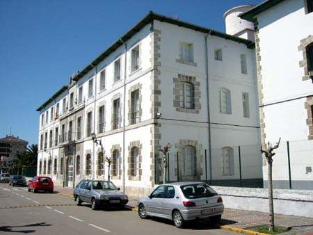
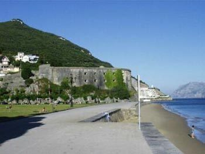
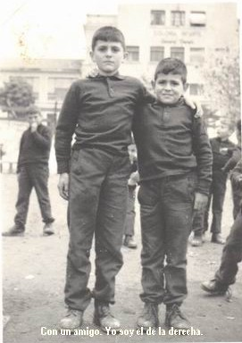
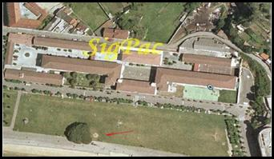
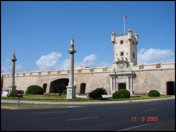
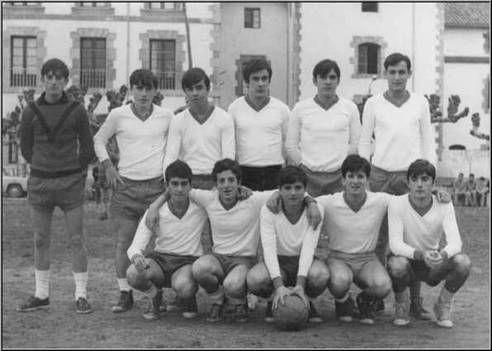
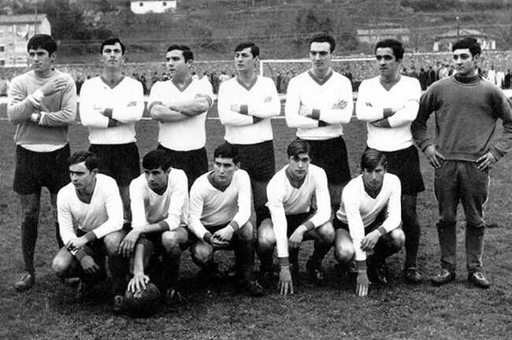

| En este espacio procuraré colocar todas aquellas anécdotas que, a lo largo del tiempo vivido en el "Viejo Cuartel", os hayan sucedido. Si os pido que no excedan más allá de dos folios y debéis de decirme el nombre, apellidos y año al que os referís. Lo podéis mandar al apartado de "Contactar". |
Carlos Pertiñez Anguita.- Recuerdos |
|
Carlos Pertiñez Anguita.- Quintana del Puente |
|
Carlos Pertiñez Anguita.- Recuerdos (2) |
|
Joaquín Aznar Mendiola.- Recuerdos |
|
Juan Díez del Corral.- Escribir algoJuan Diéz del Corral - El Patronato Militar Virgen del Puerto |
|
José Rufino Pérez Arias.- Recuerdos |
|
Jesús Mª García Hueto.- Recuerdos |
|
Jesús Mª García Hueto.- Recuerdos (2) |
|
Jesús Mª García Hueto.- Sobre los recuerdos de J.J. Acera Tejeda: Desempolvando melodías |
|
Jesús Mª García Hueto.- Cada vez somos más |
|
Jesús Mª García Hueto.- De chorizos y jamones |
|
Jesús Barrallo .- Recuerdos |
|
Jesús Barrallo.- Consideraciones |
|
Jesús Barrallo.- Respondiendo a Carlos |
|
Jaime González Merino.- Reencuentro |
|
Alejandro Fernández Alonso.- Saludo |
|
Juan José Acera Tejeda.- Recuerdos |
|
Javier Díez Montero.- Breve avance |
|
Xavier Martínez Sánchez de Neyra.- Comienzos |
|
Xavier Martínez Sánchez de Neyra .- Noticias |
|
Gabriel Segura López de Dicastillo.- Reencuentro |
|
Salvador González-Pola de la Granja.- Santoña en el corazón |
|
Emilio Lorido González.- Santoña, mi segunda tierra |
|
Emilio Lorido González - Recuerdos de Santander |
|
Javier Escribano Iglesias - Incorporación |
|
Javier Escribano Iglesias - Historias no tan agradables |
|
Joaquín Lacaci Vázquez - Del libro de visitas |
|
Joaquín Lacaci Vázquez - Soltando lastre (1) |
|
Joaquín Lacaci Vázquez - Soltando lastre (2) |
|
Joaquín Lacaci Vázquez - Haciendo trampas |
|
Joaquín Lacaci Vázquez - Fotos aéreas |
|
Joaquín Lacaci Vázquez - El mediopensionista feliz |
|
Joaquín Lacaci Vázquez - PISHA 4 ESTACIONES. Chirigota de CAI |
|
Joaquín Lacaci Vázquez - TIBURÓN CERO |
|
Joaquín Lacaci Vázquez - DEPORTES MARGINALES. El balón-tiro y el desencuentro |
|
| Joaquín Lacaci Vázquez - La Líbido en el internado. Verdad verdadera | |
| Joaquín Lacaci Vázquez - Historias cinco | |
Tomás Lacaci Vázquez - Presentación |
|
Antonio López (Tony) - Del Libro de visitas |
|
Francisco Nebrera - Santoña |
|
Enrique Peraita - Del libro de visitas |
|
Enrique Peraita - Recordando el "007" (vídeo) |
|
Luis Barreiro Torres - Recuerdos de Santoña |
|
Matías Simón Villares - Un saludoMatías Simón Villares - Cincuentenario del Patronato Matías Simón Villares - Gracias mi querido profesor D. Luis Domínguez (foto) (+10-02-2014) Matías Simón Villares - Cuando el dolor deja de doler - A la memoria de Charo (Rosario López Sánchez) |
|
Ignacio Izquierdo Sánchez |
|
Jesús Fernández de Fuentes - Hola |
|
Amador Guzmán Villaverde - Atento la tropa... |
|
| Amador Guzmán Villaverde - Recuerdos | |
Diego Rueda Caballero - Añoranzas |
|
Diego Rueda Caballero - Añoranzas II |
|
Angel Saiz Cantero - Sobre las Añoranzas de Diego Rueda Caballero |
|
Emilio Solo de Zaldívar y Ducasse - Saludo de bienvenida I y II |
|
Hipólito Rueda Caballero - Santoña |
|
Ramón Rueda Serna - De alumno a Director |
|
Jesús Mirallas Moreno - Santoña |
|
Juan Carlos Argüelles Ordóñez - Recuerdos (I) |
|
Juan Santiago Martín Duarte - "Cuando el grajo..." Juan Santiago Martín Duarte - "Una de natillas..." Juan Santiago Martín Duarte - "La sotana de don Esteban y los Ejercicios Espirituales" Juan Santiago Martín Duarte - "Diciembre 2013, Santoña en mi recuerdo y dentro de mi corazón" Juan Santiago Martín Duarte - Y en el 73 llegaron ellas: las chicas (1ª parte) Juan Santiago Martín Duarte - Y en el 73 llegaron ellas: las chicas (2ª parte) Juan Santiago |
|
José de la Dehesa y Sáinz de los Terreros - "Historias del 62" |
|
Juan Ignacio Niño Taboada - Recuerdos |
|
| Paloma Gómez Nogales - Veranos en el Patronato | |
| Jaime Pellico Alonso - Recuerdos de otros recuerdos | |
| Javier Orellana Mallavia - Cincuentenario | |
| Juan Fe Marqués - Una Historia de amor |
Carlos Pertiñez Anguita.- La verdad es que Santoña se me ha quedado muy hondo y solo estuve 1 año, pero me gustó aquel cambio que sucedió en mi vida. Confío que podamos recordar más cosas ,si te parece, te doy datos y tu me respondes o bien me preguntas y yo intentaré responderte.Había una profesora muy guapa y parecía que estaba liada con el profesor de la asignatura FORMACION DEL ESPIRITU NACIONAL. Ella se llamaba ARACELI, creo que le apodábamos CELIGETA. Nos daba GEOGRAFIA.Recuerdo en el dormitorio que, cuando apagaban la luz para dormir y no se podía ya hablar, jugábamos con las sábanas a carreras por el pasillo del dormitorio, dos tiraban de la sábana y el otro iba subido en ella.Recuerdo el comedor, no si éramos 6 alumnos por mesa o mas. La comida no estaba mal.El recreo lo podíamos hacer fuera del colegio enfrente,donde estaban los pinos.Los de preu (los mayores) aquel año, construyeron una pista de tenis de tierra batida, al final del paseo cerca del fuerte de SAN MARTIN.Cuando íbamos de paseo por SANTOÑA los domingos, podíamos entrar a todos los lugares gratis. Alguna vez íbamos al campo de fútbol a ver al equipo del pueblo, incluso nos ofrecían la gente sus asientos para que puliéramos ver el partido sentados y ellos lo veían de pie, naturalmente no aceptábamos la invitación.
Año 1963/64
Mi primer contacto con
Santoña, fue el ir en verano acompañando a mi padre, recién
destinado a Madrid desde Tenerife (de donde somos los siete hermanos), para
dirigir las obras de finalización de transformación de cuartel
a colegio internado. Me acuerdo de ver el la playa de Laredo “algo”
que según me informaron era que se estaba rodando la película
de “El Coloso de Rodas”, ya no me acuerdo pero sería un figura
muy alta y colosal, je,je,je. Después de varios años regresaría
a Santoña, pero de alumno interno.Si
algo tengo claro en la vida es que algo me dejó marcado el año
que pasé en Santoña. 
Pero, claro, los recuerdos son contradictorios, solo estuve el curso 1966-67,
tenia 14 años y fui a cursar 4º. Era mi primer internado, y lo hacia
como el primero (y único de los 7 hermanos), los preparativos del viaje
(como dice Manuel J. García Hueto, fue muy alentador y fascinante) preparar
la maleta, el “primer ajuar” la ropa, debidamente marcada, con las
iniciales, el numero, la clase... tantos pañuelos, tantos calzoncillos,
no sé cuántas camisetas, las camisas...Luego
el viaje que hice con mi padre y hermano Ignacio, el desembarco y el gran vacío
de quedarte por primera vez desprotegido del manto familiar, así que
los comienzos y los ratos de moral baja, no fueron muy agradables, ya que, a
base de conocer el nuevo Centro, los nuevos compañeros, los nuevos profesores,
los nuevos hábitos de horario y costumbres, para los recién llegados
y sin apoyos, era muy, muy duro.
Con esos comienzos te puedes
figurar que los recuerdos son pocos y variados.Recuerdo
el uniforme (chándal azul?????), el campo de fútbol delante del
colegio, la bahía con Laredo enfrente, el castillo a la izquierda, la
plaza del pueblo y los helados de corte (mas grandes y baratos que en Madrid).La
profesora de Francés?? Que tenia un barco de pesca????.El
profesor de matemáticas (con bastante mala fama de duro, ¿puede
ser Arrontes?)El gimnasio, donde
pasaba horas con otro compañero (muy dotado para los saltos de aparatos
y que me enseño mucho) que no me acue 
Los Domingos que fuimos a ver algún partido de fútbol (3ª regional?), ya que jugaba unos de los “inspectores” .Las perrerías de unos a otros, dando la vuelta a la cama cuando estaban dormidos, las novatadas a los “mas desgraciados” (como era habitual en estos centros), el encerrar en la taquilla a algún desprotegido o despistado.Las salidas para ver “Belfegor, el fantasma del Louvre,” la serie aquella de tres o cuatro capítulos que hizo estragos y que terminaba a la vuelta de las vacaciones de Navidad, serie que marcó mucho a la audiencia....Las pastas y el café que nos preparaban las monjitas, cuando les decíamos que teníamos que estudiar para algún examen....Y sobre todo el deporte que hice, QUE EVASIÓN, me apunté al equipo de baloncesto y de balonmano, en balonmano llegamos a jugar la semifinal provincial en Torrelavega.. Los concursos de salto de altura en el campo de fútbol de Santoña. (salto con caña de bambú en lugar de cuerda y caías directamente en arena, no en colchoneta)......
El viaje de regreso desde Madrid a Santoña después de las Navidades, en autobús, que no se donde se salió y se quedó casi volcado en la cuneta nevada, y tuvimos que estar en la cafetería de un pueblo (que tenia la calefacción por “glorias” en el suelo), hasta que lo sacaron.....Me acuerdo de un paseo a la playa de Santoña, cazando lagartos, otra excursión a Santillana del Mar y visita a las cuevas de Altamira (las autenticas¡¡¡¡¡).El año fue horrible, en cuanto a los estudios, solo saqué Francés y Educación Física (clarooooo).De nombres, ni uno, son todo nebulosas, pero si me ayudáis a recordar, supongo que los malos recuerdos se tornaran en menos malos. (ahora que he conseguido la lista de clase, me empiezo a recordar a los compañeros.....)Ya ves, estos son mis recuerdos de ese año, luego fui interno, pero en el Ramiro de Maeztu de Madrid (mas cerca de casa).Ahora con 52 cumplidos, Arquitecto Técnico, con un chico de 20 haciendo Informática y una niña de 18 en Empresariales, se ven las cosas de distinta forma, y se necesita la memoria colectiva de los compañeros dejados atrás, para recomponer la particular en esas lagunas que por desgracia quedan, tampoco he tenido la ayuda de los recuerdos fotográficos, ya que con ellos hay cosas que no se olvidan.
Juan
Díez del Corral.- Trataré
de escribir algo sobre Santoña, y será gracias a tu solicitud.
Es curioso, porque dedicando ahora bastante de mi tiempo a la escritura, nunca
se me había ocurrido ponerme a relatar nada de aquellos años de
nuestra infancia.
En principio te cuento que yo empecé primero de bachillerato allí
en octubre de1963, es decir cuando tu debías de estar en cuarto o quinto,
los dos cursos fundadores; y que éstudié allí hasta el
curso 1967-68, inclusive.
Curiosamente ya estaba en una de las pocos fotos de tu página: soy el
que está respondiendo a las preguntas de Neyra bajo la pancarta de Somos
los Mejores en la foto que él ha colgado. Por cierto que ya le he dado
las gracias por el elogioso comentario que hace de mí.
Por si la quieres poner, he encontrado y digitalizado la foto que me hicieron
nada más llegar allí. Era para algún carnet, y recuerdo
que no nos hicieron una foto a cada uno sino que nos hicieron una foto a todos
juntos y luego la fueron recortando a tamaño carnet. Economías
de la época. Para ver el cambio operado por cuarenta años, te
envío también la que me acabo de hacer para el carnet de identidad.
Lo dicho, cuando saque algo de tiempo te escribiré algo.
Un abrazo
Hola amigos y ex compañeros del Patronato Militar de Santoña:
Mi nombre es Rufino Pérez Arias (Rufo para los amigos). Mi promoción inaguró el Patronato Militar "Virgen del Puerto" en octubre de 1960. Ese primer año, se cursaron 1º y 2º de Bachillerato. Yo estaba en 2º. Procedía de Logroño. Al año siguiente 1961-62 cursé 3º .
Bueno, ahora algo de mí:
Estoy felizmente jubilado de forma voluntaria e intento vivir tranquilamente, sin grandes pretensiones y sin lujos superfluos o ambiciones desmedidas, los años que me queden de vida. Eso sí rodeado, de buenos amigos y, de gente maravillosa que merezca la pena.
Desde que salí de Santoña, he vivido en Logroño, enTenerife y en Madrid. Actualmente resido en Béjar (Salamanca) . He sido padre de tres hijos con mi primera esposa y, ahora de nuevo desde hace 17 años estoy felizmente casado por segunda vez, con una mujer maravillosa que me quiere, cuida y soporta.
Bueno, un abrazo muy fuerte para todos.
Rufo “Freeman”
Jesús
Mª García Hueto.- Un
paseo por los recuerdos.- Parece
que a todos nos pasa lo mismo, ¿tanto nos marcó aquella época?,
¿no serán los recuerdos y la nostalgia propias de la niñez?.
De una u otra manera, es cierto que aquellos años de Santoña a
todos nos han dejado una huella imborrable. El que más y el que menos
ha procurado en estos cuarenta años buscarse una excusa para darse una
vuelta por el colegio. Yo lo hice el año pasado y la verdad es que mereció
la pena. Todo igual, todo en su sitio... bueno algunos cambios propios del paso
de los años y los nuevos usos del colegio y transformaciones sufridas,
pero en esencia lo mismo.
La Fachada tan impresionante, la explanada con sus cuatro o seis pinos en aquel
lado ( que quien los pondría) el monumento a Juan de la Cosa, el puerto...
cuantos recuerdos en aquel puerto, recuerdas cuando íbamos a pescar unos
pececillos que creo se llamaban brujas o sapos. Aquel primer cigarrillo fumado
con diez u once años paseando por la escollera del puerto. La plaza del
pueblo rodeada de esos árboles casi siempre sin hojas, el quiosco de
la música y el cine, ¿te acuerdas del cine?. Que guirigáis
se formaban algunas tardes con el séptimo de caballería y los
indios. Alguna vez vi alguno saltar del gallinero al patio de butacas. El nuestro
del colegio era mas tranquilo, pero a la salida del cine los domingos, ya de
noche ¿recuerdas ese olor a sopa tan característico que llegaba
de la cocina?.
Entre en el colegio y una señorita muy amable nos dejo entrar a mi esposa
y mi hija que me acompañaban, había unos cursos de no se que y
algunos chicos y chicas ocupaban unas aulas, a mí me daba igual, yo estaba
transportado en el tiempo.
El patio, que pequeñas se ven las cosas cuando eres mayor, estuve un
rato paseando por las galerías, me senté en el patio junto a la
pared del botiquín donde nos sentábamos hace cuarenta años
a tomar el sol ( cuando salía) en aquellas mañanas de invierno
durante el recreo del cuarto de hora. Desde allí sentado veía
todo el colegio formado en el patio... la capilla, las galerías de las
clases, el comedor. Al pronto me quede en blanco otra vez y escuchaba a lo lejos
alguien que te nombraba por que tenias carta o un paquete de casa. Que buenos
aquellos paquetes con su chorizo, la lata de leche condensada, las galletas,
un par de calcetines que te mandaba tu madre por que te los dejaste en navidades
y la carta, esa carta escrita con la caligrafía tan perfecta que tenían
nuestras madres. Y paseando por el comedor me parecía ver las tazas aquellas
blancas de porcelana a las que había que “ capar” partiéndole
el asa con el suficiente tino de no romper la taza. Cuando llegábamos
al comedor estaban las vienas con la mantequilla untada en la parte de abajo.
, Que coraje cuando te habías jugado con algún compañero
la parte de abajo de la viena y la perdías, ese día solo tenias
pan para migar... tampoco estaba malo, además era lo que había.
Esa fila de chavales para recoger la merienda y al llegar te daban un trozo
de pan y chocolate “ de tierra”,¿ lo recuerdas?. Otra vez
lo perdías por jugártelo.
¿Te acuerdas de cuando veíamos la televisión en el cine?
. Era un aparato metido en un mueble de madera y veíamos partidos de
fútbol y una vez nos pusieron en el cine una peli que se titulaba “
Caravana de esclavos” y nosotros la subtitulamos “ Caravana de cortes”
por la cantidad de los mismos que tenia la película.
Uno de vosotros recordaba lo de los viajes, eso sí que tenia guasa. En
aquellos vagones diez por departamento, toda la noche. ¿quién
era el que se subía y se metía en el hueco de encima de la puerta?.
Que distintos eran los viajes de octubre y los de final de curso, ¿verdad?.
También recuerdo lo que comentabas de las carreras por el dormitorio,
dos tirando de la colcha y uno sentado, aprovechando que los suelos eran de
“linoleun”. Y cuando teníamos exámenes y estudiábamos
metidos en los armarios con una vela. Yo dormía en la camareta del centro,
donde estaba el crucifijo y el timbre... maldito timbre que no paraba de sonar
para despertarnos, menos mal que no recuerdo el nombre de mi compañero
de cama le dio un certero zapatazo y quedo con un sonido mas agradable, aunque
aquello trajo cola después.
Se me quedan cosas que contar y que preguntar de las monjas, los celadores,
los profesores etc. Son muchos recuerdos que si te pones, poco a poco los vas
poniendo de pie.
Otro día me daré un paseo por los recuerdos con vosotros, ahora lo aparco por que mi hermano Manolo que es el que manda en la pagina ha dicho que no nos extendamos mucho, y uno metido en faena es capaz de escribir un libro.
Un fuerte abrazo para todos y hasta la próxima
Jesús Maria García Hueto.
Jesús Barrallo.- Es mi séptima u octava visita a Santoña desde que lo deje en el 68, pero ahí esta como siempre mirando al mar. En este caso fue una visita rápida,nos dimos un baño estupendo en frente del restaurante Brisa.Nos tomamos unas anchoas y navajas(muergos) en la plaza san Antonio(la de la banderita de los bailes),mientras miraba a las mujeres de 50 a ver si descubría alguna antigua novia,pero nada,luego hice una visita al colegio,que ahora es Academia de preparación de suboficiales para la Academia Militar,en el primer pasillo al entrar sobreviven sorprendentemente unos cuadros de honor,yo estoy en uno en el que también esta Juan Diez del Corral,por cierto un saludo,aunque eras mas pequeño me acuerdo de ti perfectamente.El verse allí te hace sentir el Colegio como mas familiar,el conserje me dijo que todavía sigue de celador Daniel Bueno un saludo a todos.
De los antiguos
alumnos registrados solo recuerdo a J.Martinez y Sánchez de Neyra, gran
amigo de mi curso,a su hermano Jesús que andaba por allí,muy rubio,
y a Juan Diez del Corral, para los que me no me conocéis o recordáis
os diré que estuve en Santoña de 1961 a 1968 y en Quintana del
Puente en 1960,estuve allí hace 3 o 4 años y está el edificio
abandonado y en ruinas,una pena.
Estoy casado,sin hijos,tengo 53 años, soy economista,pero trabajando
como controlador aéreo desde los veinte años en Aena,donde he
pasado por todos los puestos posibles incluyendo una estancia en Bruselas de
3 años. He trabajado en Paris, Barcelona, Fuenterrabia y sobre todo en
Madrid incluido la torre de Barajas, donde trabajé en 1974 (era un chaval),ahora
trabajo en los servicios centrales de AENA, donde me tenéis a vuestra
disposición.
Bueno esta presentación me ha quedado un poco seria,en realidad lo que
importa es que el espíritu cachondo de Santoña no me ha abandonado,dicen
que uno es de donde hace el bachiller, así que cualquier excompañero
de Santoña sea o no de mi curso lo considero mi "paisano" y
tiene todo mi cariño.
Por cierto un saludo a José Rufino Pérez al que no recuerdo y
cuya sinceridad contando su historia personal me ha encantado,tenemos una conexión
aeronáutica,aunque a mi no me ha gustado lo de pilotar, muchos compañeros
míos son pilotos. Lo que tu historia demuestra es que en la vida aparte
de fracasos(ruinas incluidas)y triunfos (entre comillas) lo que realmente importa
es vivirla, y vivir para contarlo.
Podía estar escribiendo indefinidamente sobre Santoña, en 7 años
tengo mil historias y muchas fotos, mi padre estuvo en el Sahara destinado y
me trajo de Canarias una Voiglander cuando yo tenia 13 años que yo utilice
profusamente, incluso recuerdo que en una época hacia fotos a los pequeños
para que mandaran a casa, la verdad es que las cobraba,con el dinero que nos
daban los domingos no teníamos ni para helados.
Intentare contar alguna de estas historias y mandar algunas fotos.Por cierto
en el equipo de fútbol del Álbum de recuerdos que es del año
1961 yo soy el pequeñajo primero por la izquierda agachado.
Un abrazo
Jesús
Barrallo.-Tiene razón
Manuel, aqui no escribe nadie."Los del Patronato" es como nos llamaban
los del pueblo, me imagino que a los chavales de nuestra edad no les debía
hacer mucha gracia esa invasión de foráneos. Algunas consideraciones
sobre el efecto de estar interno a partir de lo 10 añitos: -Algunas Ventajas:
1) Cuando fuimos al cuartel, mili o milicias estábamos como en casa,
nos las sabíamos todas. 2) Aprendimos desde muy pequeños que la
gente te puede abandonar, hasta tus padres y no pasa nada, la vida sigue. 3)
Nos ahorrábamos un montón en llamadas de teléfono, tus
amigos los tenías siempre a mano y de transporte público no hablemos.
4) No teníamos dudas sobre la ropa que nos íbamos a poner, lo
teníamos muy claro. 5) Por mucha hambre que hayamos podido tener después
del colegio, nunca será lo mismo, yo soñaba con habitaciones hechas
de quesitos "El caserío".Vacunados contra el hambre. 6) Efecto
"MISA", aunque no volvamos a pisar una iglesia, es difícil
que cualquier mortal católico nos supere en numero de las mismas. Totalmente
vacunados. 7) Nos ahorramos un montón de duchas, dos por semana y si
había agua caliente. Algunas Desventajas: 1) Durante un tiempo solo nos
gustaron las chicas con uniforme, deformación profesional, no por los
militares, sino por las guapísimas (así nos lo parecían)chicas
de servicio, que eran las únicas que teníamos a mano, nunca mejor
dicho. 2) Nos costo al dejar el Colegio aprender a combinar la ropa, así
que durante un tiempo vestíamos un poco horterillas, cosas del chándal
único y la chaqueta azul dominguera. 3) Al volver del exilio, en nuestra
ciudad natal estábamos un poco desubicados y nuestros amigos desperdigados
por toda España. 4) El empacho de libertad después de 7 años
de formar fue demasiado, cuando pare las juergas ya tenia 35. PODIAMOS MENCIONAR
MUCHAS MAS, OTRO DIA, BUENO NO OS LO TOMEIS MUY EN SERIO, LO EXPONGO CON MUCHO
CARIÑO Y ADEMAS SI ES NECESARIO OS PUEDO CONVENCER DE TODO LO CONTRARIO.
Carlos
Pertíñez Anguita.- Posiblemente
no seré el único que le ha sucedido lo que a continuación
os voy a contar. Cua 
Carlos Pertiñez Anguita.- COSA QUE NO RECORDAMOS: HOLA JESUS: No se si coincidimos en el Patronato,pero por lo que cuentas algunas cosas si las recuerdo.El olor a sopa cerca del comedor o las cocinas,recordais el olor a las anchoas de las fabricas toda Santoña olía.
Recuerdo que instalarón un circo enfrente del patronato habia un dia que era para los alumnos y el resto de la semana era para el pueblo. Recuerdo las traineras en la bahia,cuando entrenaban y algunos domingos habia competición,la rivalidad eran los de CASTRO URDIALES. Recuerdo la humedad, la ropa la teniamos mojada cuando nos levantabamos,al atardecer el color del mar en la bahia,o ver Laredo habia dias que con la marea practicamente podias cruzar andando.
La profesora de frances,la recuerdo una persona mayor,que la clase pasaba de ella no se imponia a los alumnos.Incluso recuerdo que hubo problemas con los alumnos mayores. Recuerdo el campo de futbol del pueblo vagamente,lo que si se me ha quedado en la memoria era que las personas de Santoña nos respetaban,hablo del año 1963 y yo tenia 10 años,posiblemente era porque cuando saliamos al pueblo de fiesta el domingo los celadores nos leian la cartilla,no lo se.Pero se me ha quedado el muy buen trato,que las gentes del pueblo nos dispensaba. Las escursiones por la montaña y ponernos cercar de los acantilados,ahora piensas el riesgo que se corria y la poca cabeza que teniamos en acercarnos al borde del acantilado como si fuera un juego.
Recuerdo el equipo de balonmano se llamaba "MONTESOL" y nuestro entrenador era un alumno de los mayores. Recuerdo que los gitanos vivian en el fuerte de SANMARTIN,varias familias. En la playa cerca del fuerte ibamos con el profesor de FEN y buscamos en la arena camarones o chinchillas,no se como se dice eran como gambas muy pequeñas. Recuerdo los cambios del tiempo muy rapidos del sol a nublarse en poco rato,el viento. El estado animico me cambiaba según la climatologia. Sigo pensando que aquel año que pase en el PATRONATO MILITAR DE SANTOÑA,fué inolvidable,y que los 40 años que han pasado, practicamente media vida,hay un niño dentro de mi que quiere recordar aquellos momentos. Abrazos a todos,hasta pronto.
CARLOS PERTIÑEZ ANGUITA (BARCELONA)
Jesús
Barrallo: Acerca de
los recuerdos de CARLOS
Hola Carlos, tus recuerdos son los de todos, igual que los mios y forman parte
del gran archivo que tenemos almacenado y que va surgiendo cuando lo lees. Te
quiero decir que en Santoña no habia casi andaluces porque existia un
colegio similar al nuestro que estaba en RONDA (Malaga) y aunque las referencias
que tengo de ese colegio son minimas, me imagino que irian a él mayoritariamente
personas del SUR. No asi en Quintana del Puente donde recuerdo que uno de mis
amigos era precisamente malagueño. Lo de hacer libritos con trozos de
baldosas debia se una tradicion porque yo tambien lo recuerdo y no digamos las
cabañas.
Claro que coincidimos en Santoña, yo estuve de 1961 a 1968 y soy un año o dos mayor que tu. Las gambas pequeñas que mencionas probablemente son quisquillas. Fuimos socios del Santoña club de futbol un año e ibamos los domingos a verlo, jugaba un jugados negro Vicente que posteriormente he sabido que llego a jugar en el Racing de Santander y es el padre de ENGONGA jugador de la seleccion española algunos partidos. Yo he vuelto a Quintana del Puente,una vez en 1979 y el colegio estaba bien,me lo dejaron ver,era sorprendente como todo era mas pequeño que en los recuerdos,volvi hace dos años y estaba en ruinas y abndonado,por cierto a pesar de estar en Quintana un verano y un invierno, no fue hasta 1979 en que conoci el pueblo, pues no bajabamos nunca. Bueno un abrazo.
Jesus Barrallo
Jaime González Merino: REENCUENTRO.- ¡ HOLA MANUEL GARCÍA HUETO !. ¡ CUANTOS RECUERDOS !. ¡ QUÉ GRAN IDEA HAS TENIDO EN DAR A CONOCER ESTA PÁGINA !. A TRAVÉS DE JESUS BARRALLO HE SABIDO DE ELLA Y LA VERDAD QUE HE PASADO GRANDES MOMENTOS DESMENUZANDO CADA UNO DE SUS APARTADOS. ESPEREMOS QUE ENTRE TODOS VAYAMOS AUMENTÁNDOLA Y DIFUNDIÉNDOLA.
EN MI LIBRO DE CALIFICACION ESCOLAR QUE TODAVÍA CONSERVO, SE VE QUE EMPECÉ EN EL CURSO 1960-1961 Y TERMINÉ EN EL AÑO 1967, CUANDO ESTABA DE DIRECTOR JUAN LOPEZ EISMAN. ANTES HABÍAN ESTADO DE SECRETARIOS JOSE ESTEBANEZ SAIZ, MANUELA ALCOVER LLADÓ, ILDEFONSO Mª RODRIGUEZ DE LAMA, CARMEN VAZQUEZ DE OBESO Y ESTEBAN SANCHEZ RECIO. YO TAMBIÉN ESTUVE EN QUINTANA DEL PUENTE.
ES CURIOSO QUE HAYAN PASADO YA 40 AÑOS DESDE AQUELLAS “CIRCUNSTANCIAS” Y TODAVÍA HAY ALGUNOS DETALLES QUE PARECEN QUE HAYAN SUCEDIDO AYER MISMO, Y EN CAMBIO OTROS LOS RECUERDAS DE UNA FORMA DIFUMINADA, BORROSA, CON SOMBRAS. PERO RÁPIDO HA EMPEZADO A FUNCIONAR LA MÁQUINA DEL TIEMPO Y HAN VENIDO A LA MEMORIA LA EVOCACIÓN DE CUANDO ÍBAMOS A ESCALAR POR LAS ROCAS DE LA PLAYA, MÁS ALLÁ DEL FUERTE DE SAN MARTÍN, CUANDO SUBÍA LA MAREA, QUE NO SÉ CÓMO NO NOS MATAMOS. O AL FARO DEL CABALLO, BAJANDO LOS CERCA DE 700 ESCALONES. CUANDO LLEGUÉ AL COLEGIO TODAVÍA OLÍA A PINTURA FRESCA Y HABÍA ZONAS QUE AÚN NO ESTABAN TERMINADAS, COMO LA CAPILLA, Y POR ESO ÍBAMOS A MISA LOS DOMINGOS AL PUEBLO, EN FILA INDIA POR LA CALLE.
ME HA DADO UNA GRAN ALEGRÍA EL RECONOCERME EN ALGUNA DE LAS FOTOGRAFÍAS QUE HAS COLOCADO EN LA PÁGINA, COMO LA DE LA EXCURSION A COMILLAS. CÓMO ME ACUERDO DE CARLOS “PACHANGA”, QUÉ CARTELES HACÍA ANUNCIANDO LA PELÍCULA DE CADA SEMANA. ERA UN GRAN ARTISTA. ESPERO HAYA PODIDO DAR RIENDA SUELTA A TODA LA CREATIVIDAD QUE DESARROLLABA.
ESPERO PODER ESTAR EN CONTACTO CON QUIEN ME RECONOZCA Y TE AGRADECÍA ME CONFIRMARAS QUE ESTE CORREO TE HA LLEGADO CORRECTAMENTE. UN ABRAZO.
Jesús Mª García Hueto.- (Acerca de los recuerdos de Carlos)
Querido Carlos, hace días que quiero responder a tus recuerdos que enviaste a esta magnifica página que ha creado mi hermano, y que nos hace poder desempolvar la memoria y traer aquellos recuerdos de niñez tan magníficos y que son parte de nuestra vida. Fíjate que entre mis recuerdos, los tuyos y los que los demás van plasmando en este foro, vamos repasando aquella infancia tan maravillosa vivida en Santoña.
Ayer, con el trágico suceso ocurrido a unos pescadores de Santoña, me vino al recuerdo unos días de Galernas del cantábrico pasados en el colegio. Sin luz, con unas tormentas impresionantes y diluviando. Unos vientos terribles y recuerdo que por lo visto se soltó alguna embarcación del puerto y creo, que el padre y dos hermanos salieron a intentar capturarla y murieron algunos ahogados. Recuerdo que contaban que el padre estaba en un acantilado agarrado a la roca aguantando a uno de los hijos y que la fuerza del mar se llevo a alguno de los dos, creo que los encontraron por Castro. Una historia así debió suceder, por que tengo un vago recuerdo de que alguien nos lo contara.
En otro orden de cosas y contestando a tu entrañable álbum de vivencias, no te recuerdo exactamente, pero seguro que estábamos los dos allí, que es lo importante, y seguramente en mas de una ocasión hasta en la fila de la merienda, o juntos sentados en el cine, y lo mas importante es que si un día nos encontráramos seguro que nos fundiríamos en un abrazo y que los de alrededor dirían, ya están estos con sus batallitas, debe ser que vamos para mayores.
Lo del olor a sopa es genial. Además, en alguna ocasión lo he revivido y siempre he dicho… huele igual que en el internado.
En lo que has estado sembrado ha sido en lo del Circo. Al leerlo me pasaron por la mente toda la película de aquello. Fíjate que si recuerdas era un circo pues eso de pueblo, y me causo una gran impresión ver que eran las mismas personas las que hacían distintos números, y además los anunciaban con nombres distintos. Y recuerdo también que tocaba un grupo musical que interpretaba canciones de Rolling Stones y de Beatles.
Recuerdas los lavabos del dormitorio, lo menos cuarenta lavabos pegados todos a la pared, donde lavábamos las camisas de suybalen y luego tendíamos colgadas en una percha y se quedaban impecables. Y las duchas del dormitorio, unas diez o doce y una vez a algunos se les ocurrió arrancarlas…. (¿)es que había algunos “gamberretes” que hacían algunas….
Tú recuerdas la profesora de francés, ¿y la de matemáticas te acuerdas? Tenia una bici de aquellas con motor ( velosolex, o algo así) Y El cura que daba latín y que era el jefe de estudios, se llamaba Ildefonso. Y un lío que se monto cuando la revalida de cuarto, cuando yo estaba en ese curso, que pasamos solo 14 de los dos cursos.
En el equipo de Balonmano infantil jugaba yo de portero y recuerdo al entrenador y el equipo de mayores.
Y las excursiones por la montaña eran la leche. Hace dos años me parecía mentira que por aquellos risco subiéramos como cabras. Lo que hace la edad.
Lo de las gambas con el profe de FEN también lo recuerdo, por cierto que tenemos metida una foto con el mi hermano y yo, el tal Berruezo.
Bueno que como siga por este camino le terminan a uno sudando los ojos. Otro día mas, y a ver si se anima algún otro que esto es muy bueno para el alceimer.
Un fuerte abrazo a todos
Jesús
Alejandro Fernández Alonso.- Saludos
Querido Manuel : He tenido contacto con tu página a través de la inicialmente cercana y ahora inabordable web mi pasado.com. Estuve en Santoña nada menos que 6 años, entre 1968 y 1974, es decir, todo el bachiller salvo C.O.U., que hice en Oviedo, mi ciudad de origen. Soy, por tanto, un carcamal de 46 años que guarda (atesora) recuerdos algo neblinosos del Patronato. Hace unos 10 años, un compañero de mi curso, Jose Luis Sanz Peciña, intentó contactar telefónicamente con algunos de nosotros, pero me fué imposible acudir a la cita en Santoña porque desde entonces resido en Mahón (Menorca), un poco lejos. No obstante, estaré encantado de compartir recuerdos con todos aquellos que pasamos por allí. Queda a tu disposición
Alejandro
Juan José Acera Tejeda.- Recuerdos
Mi infancia transcurrió en Melilla; desde San José hasta Septiembre la playa de la Hipica era nuestro habitual lugar de juegos por eso cuando llegué al "patronato" no es que hubiera ligado bronce, sino que mi tez era más bien negro aceituno.Me apodásteis "moro" y quizás alguno me recuerde más por el apodo que por mi nombre. Hasta 3º de bachiller yo había sido un buen estudiante.Cuando mis padres deciden mandarme a estudiar a "un colegio para hijos de militares" ya estaba difícil que te aceptaran; ó entrabas desde pequeño en Quintana ó en los cursos intermedios sólo quedaban plazas sueltas para cubrir alguna baja. A esas plazas se accedía por nota y fué como a mí me aceptaron en 4º de bachiller, a los 14 años, en Ronda y en Santoña. El traslado de mi padre a Salamanca hizo que recalara en Santoña. Llegué en Septiembre un invernizo y lluvioso día gris, y tiritaba...no sé si tiritaba de miedo, de frio ó de rabia. Recuerdo perfectamente que era el único que llevaba pantalones cortos. Esas fotos en las que aparecéis todos de pantalón corto era de cuando érais más pequeños. En ese Septiembre de 1965 y concretamente el día de la llegada yo era el único que llevaba pantalones cortos.En Melilla era lo que todavía nos poníamos y mi madre en el petate no me había metido ninguno largo. Tuve que esperar unos dias a que me hicieran el uniforme y entonces fué cuando la suybalen (la de la percha en los aseos) pude combinarla con los pantalones grises del uniforme que, para entonces, ya eran largos. Muchos recuerdos del patronato..quizás más adelante me extienda más; pero en este primer recuerdo solo quiero centrar el momento..Solo pasé un año en él pero lo viví tan intensamente (mi primer año fuera de casa) que recuerdo bastantes cosas. Mi apodo era "Moro", mi amiguete más inseparable en el colegio era Jose Antonio Giraldo Ruiz (Topo´Topogigio), el compañero "de la cama de al lado" era Zozaya Cervera, mis compañeros de viaje hasta Salamanca en las vacaciones eran Fernando Hernández Espino y Angel Gonzalez Alvarez (Tocino), el celador era D. Juan Monago Baena (Juaneras), el primer cigarro que fumé se llamaba creo que Flor ó Flor de Oro, bailé con alguna Maria del Puerto y me zurré con el Escalera de mi clase, que por cierto como eran varios hermanos; éste tenía también en el colegio un hermano mayor como el de zumosol. Teníamos un cura, profesor de religión D.Valeriano que era el tutor y buena persona. Se dejaba el cuadernillo de notas en todas las partes y alguien una vez falsificó las mias.Como el listado era por orden alfabetico yo con el apellido "Acera" estaba el nº1; quizás por eso, al que lo hiciera, le fué fácil falsificar las mias. Me llamaron a Jefatura de Estudios y allí me encontré con la directora que entonces era la profesora de historia (creo que le apodábamos "la Vaca" y con D.Ildefonso "el Bola" que era el Jefe de Estudios. Estuvieron a punto de expulsarme pero desde entonces no volví a aprobar el latín. En Septiembre de 1966 otro invernizo y lluvioso día gris, con la calabaza del latin a cuestas, mientras en el coche de linea que hacía el trayecto a Santander sonaba "Un sorbito de champán" de los "Brincos", el "moro" ya no tiritaba de miedo ó de frio, lloraba...
Seguiremos en contacto Manuel. Saludos : Juan Jose Acera
Javier Díez Montero.- Breve avance
Yo estuve en Santoña de Septiembre del 66 a Mayo del 75. ( repetí un curso. De Primero a COU). Mi hermano Alfonso Diez Montero estuvo en el curso 66-67 (Un año Preu). Mi hermano Agustín Diez Montero estuvo en el curso 67- 71( de 5º a COU). Mi hermano José Luis Diez Montero estuvo en el curso 68 -72 ( de primero a 4º)
Te mandare algunas fotos del internado. Saludos
Xavier Martínez Sánchez de Neyra .- Yo soy de la 3ª promoción. Estuve en Santoña desde el curso 1960/61, en que hice 1º de bachillerato, hasta el curso 1966/67 en que hice 6º. Preuniversitario lo hice en La Coruña por libre. Por cierto, en el curso 1967/68, aprobé las matemáticas de 6º que me habían quedado pendientes y la reválida. En septiembre aprobé todas las asignaturas de preu y la prueba de madurez, con lo que en octubre del 68 comencé en Santiago mis estudios de Biología.
Xavier Martínez Sánchez de Neyra .- Día 8 de Enero de 2006.- Esta semana he tenido dos alegrías relacionadas con Santoña. El otro día dio conmigo Javier Díez Montero, era el 3 o 4 de enero y se me ocurrió ir al instituto donde me encontró. Lleva 20 años por estas tierras y un día de estos nos veremos para celebrarlo por todo lo alto. También vendrá a la cuchipanda otro compañero de Santoña, de su promoción, que es profesor de Microbiología en la universidad de Murcia. Se llama Argüelles. Estoy deseando verlos. Me comentaba Javier y, estoy totalmente de acuerdo, que los que estuvimos allí varios años pertenecemos a la misma tribu, aunque no nos hubiéramos conocido. La otra buenísima noticia es que Eduardo Lago ganó el Nadal. Ver "El Pais" del 6 de enero. Está perfectamente reconocible, al menos para los que lo tratamos más. En aquel entonces su padre estaba destinado en La Coruña. Aunque no lo he vuelto a ver desde entonces, recuerdo que era muy inteligente. A buen seguro que heredó la bonhomía de su padre, que era en personaje extraordinario. Lo recuerdo con enorme cariño. Tengo una carta de mi padre de diciembre del 64 en la que además de decirme que había tenido un nuevo hermano, que pasaríamos la navidad en Madrid y que nos recogería Lago. Debes empezar una campaña para vernos en Santoña. Nunca será masiva pero el que quiera y pueda, pues muy bien. Propongo la semana santa del 2007. ¿Apúntame? Un abrazo y mi agradecimiento por tu dedicación para la preservación de la tribu.
Gabriel Segura López de Dicastillo.- Soy de Pamplona y estuve en Santoña durante los cursos 66-67 hasta el 73-74 (tuve que repetir cuarto). El ingreso lo hice en Quintana del Puente. He tenido contacto con tu página a través de J. Diez Montero, con el que mantengo algún que otro correo. De vez en cuando me acerco a nuestro puebluco, solo estoy a dos horas en coche, en fiestas, carnavales y algún fin de semana y lo que es mejor, cuando nos reunimos algunos compañeros. Espero seguir emocionando con esta "mi otra familia" y volver algunos años atrás. Un abrazo para todos
Jesús Mª García Hueto.- Desempolvando melodías era el titulo de un programa de radio que viene que ni al pelo para agradecer a JUAN JOSE ACERA TEJADA sus Recuerdos. Resulta que fuimos compañeros de curso y clase (bueno no recuerdo bien si había A y B, creo que si) pero por los apellidos seguro que estábamos en la misma clase y letra. Digo bien lo de los recuerdos, porque yo apenas tengo una breve brisa de los nombres de mis compañeros, pero me has venido a recordar que efectivamente el topogigo, el zozaya, el escalera, incluso diría que Hernández Espino y el Tocino también eran de nuestro curso ¿no?. Incluso el que venia detrás tuya en la lista podía ser Joaquín Amat Rodríguez, y teníamos uno que corría un montón en las pruebas de Atletismo que empezaba por B creo pero que no me acuerdo como se llamaba; también estaba, Fernando Ferrer Collados, Fernando Martín Gil, la verdad es que quisiera recordar mas, pero esto va saliendo conforme vamos contando unos y otros nuestros recuerdos. Fue aquel curso de cuarto un tanto complicado y especial, si te acuerdas. No se que paso, si seria a raíz de la historia que te ocurrió a ti y que cuentas que se enfrentaron la directora y el de latín. Hubo disgusto que se diría, y se dio el caso que como cuarto tenia revalida, pues siempre se hacia una reunión para ver si se repescaban algunos para ese examen. Tal era el mancuerne existente entre ambos que tan solo pasamos a revalida creo que 14 de los por lo menos 40 o mas que seriamos en el curso. Recuerdo, y así me lo dijeron después, que en la primera vuelta en el claustro de profesores pasaron 13 y que como eran muy pocos se procedió a una segunda de la que solo salí yo por aquello que iba de cinco pelaos menos en latín como se pueden ver en las calificaciones. Se dio el caso que compañeros que tenían sobresalientes se quedaron fuera por el cabreo entre la Directora y profe de geografía e historia (que no se como se llamaba) y el de Latín D. Ildefonso. Recuerdo además, que como éramos Instituto, vino un tribunal de Santander a hacernos el examen a nosotros solos y en el tribunal eran cuatro o cinco y nosotros 14. Fue todo un escándalo. No se en que quedaría después todo pues yo solo aprobé en junio de los tres grupos el 2º y en septiembre ya en Toledo el 1º y el 3º y continué ya en Toledo los estudios.
“Juaneras”. Me maravilla la facilidad de recordar nombres que tienen algunas personas, yo soy un desastre. Juan Monago Baena, así se llamaba. Como si lo estuviera viendo, con unas gafas oscuras, y unos chalecos de botones abierto dado de si por todos lados. Mas feo que Picio, por las noches cuando entraba cabreado en el dormitorio con la linterna, se quitaba las gafas y era feo de asustarse.
Bueno, otro día mas, Gracias Juan José Acera, y no lo dejes y cuanta mas cosas y manda alguna foto si tienes. Abrazos.
Salvador González-Pola de la Granja .- Santoña en el corazón. Recuerdo Santoña con mucho cariño, en primer lugar porque para mi fue abandonar Madrid y acercarme al lado del mar y el mar eran los larguísimos veranos en Asturias disfrutando de la pesca, baños y olor a salitre, cuando el verano era de Junio a primeros de Octubre.
Después por el pueblo, aunque las salidas estaban condicionadas a las notas. Un suspenso y solo salías el domingo. Dos cates y toda la semana encerrado, además del recorte en la paga. Un paquete de Celtas 4,50.
Mi entrada triunfal fue con el curso comenzado, aproximadamente a finales de octubre del 1965 para empezar cuarto.
Nos llevó mi padre, a mi hermano y a mí. Entrevista con el Director, después con Francisco González. ¿Os acordáis, Paco Pelotas? Administración. No hay balones, y alguien puso. Pero hay pelotas.
Los primeros días bastante malos. Todas las noches durante una semana o más, caídas de la cama, agua y algún que otro golpe. A la semana cuando ya me cansé un par de leches a no se quién, con la mala pata que acabé en la puerta del inspector durante dos horas. A partir de entonces bien, las putadas las empecé a hacer yo. A Fernando Martín Gil, entre ellos, de la clase de mi hermano, y que todavía las recuerda después de casi cuarenta años.
Estudiar, lo mínimo e imprescindible para ir tirando, cangrejos por el pedreo, pesca en la Manchina , casi ahogarnos cruzando el puntal con Forcén a nado, vinos con caracachos en el Piruco, o en la OJE. unas cuantas peleas en el pueblo, escapadas para ver a Santoña en aquel programa, “Los hombres saben los pueblos marchan”. Creo que era uno que disparaba con una carabina cada vez que se fallaba una pregunta. La muerte de Toñín en la barca con su tío. Se rompió la amarra durante un temporal, y saltó dentro. No pudo ponerla en marcha y se estrelló en la salida de la bahía.
Pero sobre todo las salidas al faro de Caballo con dos chicas Puerto y Fonsi. Como todo era pecado, nos limitábamos a dar una vuelta, y a comernos lo que llevaban.
Estuve tres años, haciendo cuarto, quinto y sexto.
De la gente, a muy pocos los he vuelto a ver. Alguno de los que ingresamos en la Academia General. Lacaci, Nebrera. Zozaya, Martín Gil, Morales. A Jesús Barrayo un día en la farmacia militar de aviación en Madrid, y al resto, creo que a nadie más.
Veo por aquí en el foro a alguno de los antiguos, a Neyra, Jesús Barrayo y Jaime González Merino, recuerdo a Carlos Sánchez, a Tomas Pérez González, Forcén, Barreiro, Barco, Bitaube, Asenjo, en fin creo que fueron tiempos muy agradables sobre todo porque me sirvieron de ensayo para los cuatro años que tiré luego entre Zaragoza y Segovia.
Recuerdo la caza de ratas cuando subía la marea para luego soltarlas en el comedor. Las putadas a Juan Monago, como subirle la vespino al tejado del aparcamiento, o el escaparnos por el tubo de incendios para dar una vuelta por el pueblo. El espionaje a las chicas por las ventanas para verlas en camisón como mucho.
Creo que nuestra generación ha rentabilizado al máximo nuestros esfuerzos y hemos disfrutado de la vida de una forma que nuestros hijos no comprenderían.
Ahora estoy en Segovia. Ascendía a Coronel hace tres años y estoy mandando la Unidad de Apoyo de la Academia de Artillería. Así que si venís por Segovia os puedo aconsejar de donde no se puede comer, porque os pueden clavar.
Tengo dos hijos, el mayor en la Guardia Civil y el pequeño acabando arquitectura con muy buenas notas, ha debido salir a la madre.
En fin he disfrutado escribiendo estas letras pero me doy cuenta del tiempo que ha pasado y lo rápido que lo ha hecho.
Muchas gracias por potenciar este foro y espero que podamos reunirnos, aunque sea para ver lo bien que nos ha tratado el tiempo.
Un abrazo a todos.
Segovia Enero de 2006.
Salvador González-Pola de la Granja.
Jesús María García Hueto.- Cada vez somos mas .- Lo decía en otra de las epístolas… han tenido que pasar tantos años para recordar mi infancia y mi juventud. Son vivencias tan intimas y personales pero que las vivimos con intensidad juntos unos pocos de chavales de la misma edad y con los mismos problemas…solos tan lejos de casa. Pues esas vivencias, al menos las mías estaban en un montón de neuronas arrinconadas en una esquina del cerebro (que dicho sea de paso según parece en los hombres lo único que lo llena es el sexo). Bueno pues eso, gracias a vuestros escritos estoy volviendo a vivir esos años tan importantes de la vida. Y no es porque yo no tenga recuerdos, sino porque con los vuestros se enriquecen más los de cada uno. Eso me pasa hoy al leer la carta de Santoña en el corazón de Salvador González-Pola de la Granja. Salva, de cabo a rabo. Además que la he vivido con los ojos abiertos cada palabra de tus recuerdos. Desde el olor a salitre hasta lo de las ratas. Lo de descolgarse por el tubo para escaparse, lo malo y recordaras, que los que nos quedábamos, luego teníamos que subiros con unas sabanas liadas a los que veníais algo bebidos. Los celtas a 4,50 que nos fumábamos en el patio junto a la capilla al final. Y algunos domingos en el pueblo, cuando paseábamos por el puerto me llegue a comprar algún “guiston” que te fumabas como el que esta cometiendo un pecado pero saboreándolo. Por cierto aquellos sabores del tabaco algunas veces cuando dejas de fumar mucho tiempo y lo pruebas otra vez me traen el mismo recuerdo. Lo que nunca he podido volver a recordar es el sabor de las mantequillas mañaneras. Y aquellos cafés (o lo que fuera) en las tazas de porcelana “capadas” (sin asa). Por las fechas estábamos en el mismo curso, aunque no me recuerdas y yo tampoco y de fotos andamos “cortitos”. Si recuerdo y lo comentaba en una epístola anterior a Fernando Martín Gil como compañero y amigo de curso, al que me gustaría que saliera también por aquí. No se por que razón, y mira que tengo mala memoria recuerdo que su madre se llamaba Purificación Gil Andueza y su padre Martín Martin Martin y creo que eran separados… vagamente entre mis pocas cosas que aparecen en mis alforjas santoñesas de mis recuerdos, pero que es curioso. Lo que me ha dejado de piedra es que recuerdes tan bien lo de aquel trágico suceso del tal toñin en la barca en aquel temporal, algo que conmociono el pueblo ciertamente, yo lo recordaba, pero de eso al nombre y a lo del tío aunque si recuerdo que uno apareció en Castro o algo así.
Bueno y lo de Juan Monago para que contar.
Busca por el baúl alguna foto y a ver si somos capaces de recordar y ponernos al día de algunas cosas, que aunque no es bueno vivir de los recuerdos, si es muy sano saber que hemos estado vivos.
Gracias Salva y hasta otra.
Jesus Maria García Hueto 25-1-06
PD.- Y no quisiera dejar pasar esta oportunidad para agradecer a mi hermano ya no solo el trabajo que se toma (que es su obligación porque para eso le pagamos su jubilación) sino la feliz idea y las horas de sueño y dedicación que ha echado y se deja en crear esta pagina y mantenerla. Lo difícil no es crearla, sino mantenerla y ahí nosotros tenemos la obligación de jugar un poco para darle la vida y la agilidad necesarias, sobre todo aquellos que están ahí, que la leen y que no se deciden a contar sus recuerdos que es y son patrimonio de todos. (que peloteo “ pa” mi hermano… es para que me de un paseo en el “mercedes nuevo”)
Emilio Lorido González.- Santoña, mi segunda tierra.
Hola compañeros, soy de la Promoción de 1970/77, me llamo Emilio Lorido González, yo llegué a Santoña en 1972 y allí acabé el COU. Para mi es mi segunda tierra, ya que soy extremeño y vivo en Badajoz. Llevo a Santoña y al Patronato y a mis amigos siempre en mi memoria. Desde el año 1997, despues de 20 años, en que nos volvimos a ver muchos de los compañeros, internos, externos y mediopensionistas, nos reunimos cada tres años (año 2000, 2003). Este año toca reunión y volver a la maravillosa Santoña y a nuestros recuerdos. El DIA ES EL 14 DE ABRIL 2006 A LAS 19 HORAS EN EL BAR ZATÓN. Te ruego pongas esta noticia en tu página. Un abrazo. Emilio Lorido González.
Javier Escribano Iglesias - Incorporación
Alumno del 60- 61 al 6 4-65. Por Luis Barreiro he sabido de vuestra, nuestra, existencia. Ya mandaré algún recuerdo y algunas fotos.
Javier Escribano Iglesias
Joaquín Lacaci Vázquez - Por el libro de visitas
Curso 1961-1968 (De primero a Preu (a.i.)). Dos años antes en Quintana del Puente. Casado, tengo una hija de 28 años. Me alegro de que Luis Barreiro se molestara en encontrarme y me acuerdo bien de él por su deseo de conservar el pelo lo más largo posible en la época de los Beatles.
Joaquín Lacaci Vázquez - 11.04.2006. He pasado tres días sin dormir de la emoción de saber que existía esta página y ahora me cuesta un mundo despegarme del ordenador e irme a la cama. Ayer me puse a buscar a compañeros nuestros en las guías disponibles en Internet, yo soy, creo, del 3er año. Conseguí bastantes localizaciones, bien de ellos mismos o bien de familiares directos, mediante el método infalible de confrontar los dos apellidos contra todas las provincias de España. He visto, casi estudiado, todas las fotografías que habéis colgado en la página y, no sabría decir porqué, no dispongo de ninguna propia con la que contribuir a desempolvar y aclarar recuerdos. Los míos van desde los largos viajes de incorporación en trenes de caldera de carbón, desde Ferrol, pasando por aquellas hermosísimas excursiones con olor a tomillo en Quintana del Puente, por el bocadillo de sucedáneo de chocolate o de membrillo, con pan, que recogíamos en ordenada fila india en la parte alta de un, se me antojaba, enorme barranco, el canto diario, ¿o no?, del himno, ...
"Gloria a ti Colonia infantil
Que en el centro de mi amada España
A todos tus hijos esperas
etc.… "
.., de si Morales ganaba a lucha y ,no se que otro peleas, a puñetazos, los tremendos latigazos con la hebilla de no se que maldito cinturón que usaban las monjitas, ¡la madre que parió a alguna!, no, a Sor Inmaculada no me la toquéis.
A Santoña, ingenuo de mí que por entonces no pensaba que a mi padre, nada menos que a mi padre, alguien pudiera mandarlo lejos de Galicia, ya me incorporaba desde Madrid, cogiendo un autobús en Bretón de los Herreros ¿o Martín de los Heros?, y de allí a la estación de Príncipe Pío. La verdad es que no lloré ni siquiera en el primer viaje, aquellos chavales te comprendían bien y enseguida se hacían amigos; posteriormente no me faltaron ganas de hacerlo en aquellas “Semana Santa” insufribles, en las que con los pocos que nos quedábamos había que velar por parejas dos o tres horas seguidas en la capilla, inhumano. No recuerdo si cantábamos himno en el Patronato, aunque no se porqué me temo que sí. En los desayunos, alegre y dulce “mantequilla” de colores y en las comidas, en algunas, no siempre, filetes con avispas o moscas, no recuerdo bien, fritas que, eso si, nunca nos obligaron a comer. Y bromuro, mucho bromuro; las energías las dejábamos en interminables partidos de fútbol, la piel en los roces con las paredes y suelo de los campos de fútbol y/o balonmano, si, en el campo de balonmano que hicimos con “chocolate” el celador ex – pescador, de bocarte como todos, que trabajó como una mula en una Semana Santa de aquellas de tanto recogimiento. Y, aprovechando un día de marea exageradamente baja, cruzamos al puntal de Laredo a nado, no se como volvimos.
Alguien se levanta somnolienta de la cama y me está amenazando por la espalda, me dice que son las dos de la madrugada y que qué me he pensado..., pues eso, seguiré pensando y expresando sentimientos. Gracias por leerme.
Joaquín Lacaci Vázquez - 12.04.2006. Hoy he recibido un correo de Carlos Bitaubé. Le recuerdo con el pelo siempre muy corto, rubio y debajo de él un tipo inteligente y mejor persona. Él no era de los que nos quedábamos en Semana Santa y tampoco muy amante del deporte. Gustaba de pasear, casi siempre con un libro, de lectura que no de estudio, por la carretera que hacía de borde al mar.
Y si de detalles de los demás compañeros viene hoy, tengo que hacer públicas algunas dudas que no he conseguido despejar y algunos detalles que me llamaron la atención.
¿Recordáis, los del 3er curso, aquel chaval que decía que su padre tenía un laboratorio submarino?, sí hombre, el mismo que no podía estarse quieto un solo momento, el que fumaba siempre como si lo fueran a prohibir al día siguiente.
¿Y de aquel otro que siempre tenía un bote de Cola-Cao que le duraba todo el curso, porque no le daba a nadie una cucharadita?, sí hombre, el mismo que enseñaba una fotografía en blanco y negro de su hermano vestido de futbolista con camiseta a rayas verticales y decía que jugaba en el Atlético de Madrid (que, por cierto, no se porqué lo pongo con mayúsculas). Recuerdo una hermosa visita a las cuevas de Altamira, cuando aún no eran una imitación, que todos íbamos haciendo el recorrido por la trinchera excavada al efecto y él por la parte alta y sin tocar el techo. A mi, que quieres que te diga, lo del Cola-Cao me llegó al alma.
Ahora recuerdo aquella ocasión que a alguien se le ocurrió la idea de romper las cebolletas de las duchas y nos tuvieron dando vueltas al gimnasio una buena parte de la noche, amenazados de pasarla entera si no salían los malhechores. No salieron, claro. ¿Quiénes coño fueron los graciosos?. Bueno, pues Neyra, rodillas elevadas, brazos recogidos, pegados al cuerpo y elegante balanceo, entrenándose en cabeza del pelotón y haciéndonos correr más de lo estrictamente necesario. Tus m…
Nada diré de aquellos de este foro, aunque los tengo muy en mi memoria, “cogidos por los huevos” diría yo, que se iban algunos días, a tarde puesta, con la “chogi”, aquella lugareña que debía vivir en el fuerte y que tenía unos dientes que no conseguían taparle todos los huecos de la boca. Si a ella por un lado le faltaban piños, por el otro le sobraba descaro y alguno de nosotros, y me refiero a alguno de los que estamos en este foro, que vivía en aquel permanente revoltijo hormonal de adolescencia, lanzaba sus manos a ver que encontraba, y vive dios que, en ocasiones, encontraba. Acaba de meter gol el Español.
¿Cómo habrá llegado Maxi a ser alcalde de Santoña por el PSOE?. Ha empatado el Zaragoza. Maxi fue uno de los procedentes del instituto laboral “Manzanedo”, con Leoncio, Municha, etc., que vinieron a hacer Preu al Patronato. Eran externos. Me enteré porque lo vi, hace ya algunos años, por casualidad en un programa que dirigía el tal Ramón García en TVE y que iba de un concurso entre componentes de dos equipos que representaban a sendos pueblos y los alcaldes hacían una loa de las excelencias de visitarlos. Es licenciado en Derecho. Gol del Español. Gracias por leerme
Joaquín Lacaci Vázquez - Joaquin Lacaci Vazquez.- 13.04.2006. He leído a alguien del foro hablar de un celador que se llamaba Juan Monago y tenía una moto. Este debe ser el de las “mitras”. Creo que era de Badajoz y amenazaba continuamente con darte una mitra de las suyas. La violencia a la que se refería, consistía en darte con la mano como si fuera a apoyarla contra una pared. Rara vez te cogía porque tenía sólo un ojo válido y no medía las distancias en estéreo. Yo creía que tal golpe era una derivación amanerada del kárate, algo así como un golpe mortal dado por un cinturón lila. He estado buscando y hay 35 páginas de imágenes de mitra y en ninguna figura la existencia de tal golpe. Trampa.
Recuerdo que a los celadores que vigilaban los estudios, les hacíamos las preguntas necesarias para resolver nuestras dudas y otras camufladas entre ellas para darle el ambiente necesario de cachondeo. Juan Monago, que siempre estaba mosqueado, se prestaba a ello como ningún otro. Trampas
Estoy haciendo trampas. Entro y salgo continuamente de la página para que aumenten las estadísticas. Incluso ya no me hace falta salir, con darle a actualizar ya cuenta como si hubiese habido una nueva visita. Anoche mi mujer dio un jardazo en el baño, no, en la bañera no, en el suelo del cuarto de baño y, aparte de alguna brecha y moratones hasta en el cielo del paladar, tenía un enorme dolor de cabeza. Le di un Nolotil y a la cama. Esta mañana, que no le había calmado nada el dolor, me he dado cuenta de que el Nolotil estaba caducado desde el año pasado y, naturalmente, no le he dicho nada. Tramposo.
Acabo de encontrar el libro de calificación escolar y no me reconozco. No ya en las fotografías, que tampoco, es que creía que sacaba notas mucho mejores. Lo voy a esconder antes de que llegue mi hija, no vaya a ser que me eche en cara los comentarios aquellos de que … cuando yo tenía tu edad sacaba unas notas maravillosas. No eran maravillosas y además yo saqué el grupo común en Junio y el específico de Preu en Septiembre y ella aprobó la Selectividad en Junio. Siempre se puede recurrir a que no era lo mismo el Bachiller nuestro que el de la LOGSE. Bueno , lo escondo y santas Pascuas. Tramposo.
Hueto me ha pedido fotos de antes, que serán las del libro escolar, y de ahora. He estado mirando detenidamente las de los de mi curso, ya de mayorcitos, como Barrallo, Barreiro, Bustamante, Merino y Neyra, porque Pola no la ha puesto, y parece que están sacadas con la Voiglander que le regaló a Barrallo su padre allá por 1964. Listillos que sois unos listillos, todos sabéis que hay unas cámaras con una pila de magapixeles que te sacan hasta los pensamientos y las que habéis mandado o están desenfocadas premeditadamente o sacadas a quinientos metros de distancia y sin teleobjetivo. Tramposos.
Mi hija no me ha reconocido en ninguna de las fotos en las que estoy y eso no está bien, pero peor me hubiera sentado que me hubiera reconocido en alguna de las que no estoy. Además me dice que me he dejado una manga de una camisa sin planchar. No ha picado, esta niña no plancha nada que no sea suyo. Tramposo Morris. Gracias por leerme.
Tomás Lacaci Vázquez - Soy Tomás LACACI VAZQUEZ, alumno del Patronato dsde el año 1969 al año 1973, es decir los cuatro primeros cursos del bachillerato. también estuve en Quintana del Puente, tres años, desde 1966 hasta el año 1969 de donde pasé al Patronato. En Santoña también estuvieron mis hermanos Joaquín y Fernando.
Antonio López (Tony) - Ha sido una agradable casualidad encontrarme con esta web dedicada a los antiguos alumnos del Patronato. Animo a todas las promociones de internos a que mandemos fotos y contemos nuestras vivencias en Santoña como internos. Estuve desde el año 1991 al 1994 y fue toda una experiencia en mi vida, saludos a los compañeros, al Comandante Zurdo y a los celadores que tantas me aguantaron.
Javier Escribano Iglesias - Queridos amigos:
Menos mal que por uno de vosotros he sabido que Joaqu ín Lacaci estudió en la Academia Militar, porque me había preocupado que su tendencia a organizar fuer a natural y no inducida por su formación … No te preocupes , intentaré localizar a una persona : Ángel María Guerra García. Con Arribas y Morales tu ve poca relación ( excepto algún “ toque ” que me daría este último si alguna vez estuve cerca de él ). Por cierto, ya que habéis mencionado la ruptura de las alcachofas de las duchas, ¿os acordáis que a Arribas se le “ hinchó ” el bazo y le subieron antes que a los demás?
De mi vida poco que decir : casado, dos hijos (él 22, ella 21, se llevan 18 meses , 4º de CCEE y 4º de Derecho en CEU e ICADE ). Me casé muy pronto, con 21 años, pero hice muchas trampas y no tuvimos hijos hasta tarde . He estudiado Ingeniería Técnica de ICAI y luego Derecho y CCEE en ICADE – E3-. Soy Doctor en CCEE. Actualmente, siguiendo mi auténtica vocación estoy haciendo la carrera de Música (7º Curso de clarinete y 4º de piano). También me hice Capitán de Yate, y tengo un barco con el que me hago a la mar siempre que puedo. Esta si que es una afición heredada de Santoña. Hace catorce años, creé mi propia empresa, bueno es más bien un despacho profesional, y me dedico al mundo de las fusiones y adquisiciones de empresas. H asta aquí mi vida y milagros.
He estado en Quintana del Puente dos veces, la última hace unos 8 años , y en Santoña varias más, la última hará unos seis años. Por cierto, la última vez tuve que pedir no sé a cuanta gente permiso para darme una vuelta por dentro, aunque no me dejaron subir a los dormitorios.
Hasta otra. Una pregunta para nota: ¿Cómo se llamaba el barco pesquero gemelo del Adolfo Valle?
Os dejo tengo un cliente esperando. Un fuerte abrazo a todos,
Francisco Nebrera .- Amigo Manolo:En primer lugar darte las gracias por esa buena idea que has
tenido.Yo hace unas semanas que ando un poco alterado.Todo empezó cuando me
llama mi hermana y me dice que un tal Luis Barreiro, anda intentando
contactar conmigo.Mi teléfono está a nombre de mi mujer y por esa
circunstancia no podía localizarme.Le dió la dirección de correo del
Patronato y,tras casi 38 años de silencio,los recuerdos empezaron a aflorar
como por arte de magia.¡Y que magnifica magia!
¡Que ganas de compartir esos recuerdos de hace tantos años!Lo que tu habias
olvidado otro compañero lo recuerda como sí, de hoy mismo se tratase.Espero
encontrar algunas fotos de aquellos magnificos años y te las mandaré si
logro dar con ellas.
Te diré que estuve de 1961 al 68,no te recuerdo muy bien pero me parece que
tu eras de un curso superior.Mis compañeros que recuerde, y que me perdonen
los que no nombro,eran :Barrallo,Bitaube,Barreiro,Lacaci,Forcen,Merino,Cesar
Rodrigo,Peraita (con él estuve hablando esta mañana),Barco (aun no lo he
localizado),Morales Cobos (paisano mio que estudiaba un curso superior al
nuestro) y algun que otro que olvido pero que me ayudareis a recordar.
Bueno Manolo un abrazo y hasta otra ocasión ,pues prometo volver.
PD.- Estoy en algunas fotos de las que envia Barrallo,cuando eramos"mayores".En otras ,de "pequeños" no me encuentro.
Enrique Peraita .- Un saludo a todos, me incorporo tras ser contactado por Paco Nebrera y comenzare a rebuscar en los recuerdos. Un abrazo y apuntadme para el año que viene en santoña. Estamos en contacto.
Joaquín Lacaci Vázquez - ¿Qué te parece colgar estas fotos aéreas de los alrededores del Patronato?. SigPac es el acrónimo del Sistema de Información Geográfica de Parcelas Agrícolas.
Joaquín Lacaci Vázquez.- He de advertiros que las sutilezas incluidas en esta historia son de tal calibre, que exigen el conocimiento de las publicadas por los diferentes autores en esta página.
Efectivamente, conocí a un tal Peraita en aquel sitio. Como dice Barrallo, era mediopensionista y fue, con toda probabilidad, el más feliz de todos nosotros. Decía los Viernes – ahí os quedáis pardillos -, y volvía los domingos por la noche e incluso los lunes por la mañana, increíble.
Maxi no es licenciado en Derecho, lo es en Económicas. Fue senador electo por Cantabria en las 3ª, 4ª y 5ª legislaturas (del 22.06.1986 al 09.01.1996) y alcalde del Ayuntamiento de Santoña desde 1983 a 1991 y de 1995 hasta 1999. En la actualidad es Director General de Economía del Gobierno de Cantabria. A Maxi lo que es de Maxi y al Cesar, a Cesar ni agua porque le he llamado y no ha querido entrar en la gué.
Peraita ya sabe con quien se está jugando los cuartos. Y Maxi sólo estuvo uno o dos años en aquel sitio.
Aquel año (1967, creo) el hermano de Arribas (Félix) pasó de Los Silvers a ocuparse de la batería de los Pekenikes. Y como lo que tocaban eran campeonatos provinciales escolares de atletismo, los hubo también en el Patronato. En salto de altura, Peraita y yo, y Arnaiz, de un curso o dos posterior, y Vázquez no se que, de un curso superior, y otros de los que ya no me acuerdo pero que le dieron un gran brillo a la competición. Y Víctor Asenjo de juez de saltos, tranquilo y seguro, ¡ojo al parche!.
 |
Ya os podéis imaginar que el desarrollo del concurso no fue muy rápido por la natural tendencia de Asenjo a no darse demasiada prisa en recoger y volver a colocar el listón derribado, bueno la caña (todavía no era reglamentaria la cuerda con los saquitos de arena). La competición se ajusta . . . , cae Peraita en el 0,90 o así, Arnáiz, que era más bajo que el listón pero tenía una agilidad felina, se planta en el 1,45. Quedamos el tal Vázquez y yo, los dos con la depuradísima técnica de salto que llamábamos “tijereta”. Casi las ocho de la noche y Asenjo dice que no le toquemos los cataplines que lo hace lo más rápido que puede. Lento pero no tonto, se da cuenta rápidamente de quienes son los finalistas y empieza a poner la caña o listón con la concavidad hacia arriba cuando salto yo y convexa cuando lo hace Vázquez. Llegamos al 1,53 o al menos eso era lo que marcaban los pies derechos que sí estaban graduados. Lo salto yo y derriba Vázquez por primera vez, que se queja de que siempre le tocaba el listón de aquella manera, pero Asenjo se impone y no cuela la protesta. Segundo y tercer intentos vanos de Vázquez y me proclamo, yo, Morris, campeón del mundo mundial de salto de altura. ¡Asenjo, llama!.
Aún hoy en día, en las fiestas de Santoña y por expreso deseo de Maxi, tocan las fanfarrias recordando la gran fazaña. No conseguí el monumento. Aún hay ADN de los participantes por el suelo debido a las enormes costaladas en las caídas libres…, de colchonetas.
Todo ello fue mérito suficiente para ir a los campeonatos escolares provinciales que se celebraban ese año en Torrelavega. Ahí se invierten las tornas, yo me quedo en 1,35 y Peraita, que juega en casa, se va al 1,40 y se planta. Pero queda un tipo que salta 1,75 de frente, y de perfil, sin tijereta ni gaitas. Yo creo que esa altura todavía no lo saltaba Garriga con todo su golpe de rodillo ventral.
Como Peraita vivía en Torrelavega, cuando terminó la competición me invitó a ir a su casa. Nos sacó su madre un plato de caracoles del norte, bien alimentados, con su salsita y su picantito. Son esos animales, y ahora si que entiendo lo que dice Escribano por mucho que Nebrera se queje, seres terriblemente fascistas. Por otra parte, destilan tal cantidad de rabia por haber estado toda su vida encerrados, oprimidos y reprimidos en el ambiente carcelario de su concha que hay que tenerlos varios días sin comer para que suelten la bilis que llevan dentro y no amarguen.
Ya sabemos todos que los caracoles tienen los brazos, que nosotros los humanos llamamos equivocadamente cuernos, en la cabeza y los ponen enhiestos cuando se encuentran “cara al sol”. Una vez cocinados adecuadamente, dejan de saludar de esa manera fascistoide y cogen un sabor delicioso, que es lo que de ellos se espera.
Sabréis, y si no ya os lo explicaré cuando nos veamos y no pague yo, cómo come un huérfano a la menor oportunidad. Yo, a la sazón, no era huérfano pero en la manera de comer no me distinguía mucho de ellos. Ausentáronse brevemente del comedor madre e hijo a fin de entregarle al niñito el paquete semanal reglamentario con comida y me dejaron sólo. A la vuelta pudieron comprobar con horror que los fascistas habían desaparecido de sus conchas y que además me había cepillado el pan de la cena.
Tal debió ser el chorreo de la madre al niño que jamás volvieron a invitarme a la casa del mediopensionista feliz. Gracias por leerme.
Joaquin Lacaci Vázquez - PISHA 4 ESTACIONES. Chirigota de CAI
05.05.2006. Yo vivo en CAI, se pronuncia igual que se escribe. La voz KI, aunque es más agresiva, es mucho menos académica y sólo se usa esporádicamente y por grupos muy marginales. Aquí es muy corriente llamar a alguien con el slang “shosho” o “pisha”, sibilantes, según el género. Al género neutro les llaman, ilegalmente ya, de maneras irreproducibles. Tuvo cierta fama esta ciudad, de que los no iniciados andaban como los egipcios del V a. de C., de perfil y por las cercanías de las paredes para no ser hábilmente atravesados con puñaladas de carne por salva sea la parte.
 |
Cuentan también los cronistas de esta ciudad trimilenaria, que al ser tierra de partida para los viajes a las Indias, aquellas en que sus moradores hablaban con un deje especial que reproduzco: si tú conquistar mi, yo pertenecer tu ejército étnico . Bono, bacalao. Bueno, pues resulta que los barcos, a través de las ETT,s de la época, solicitaban el personal de cocina y otro y parece ser que precisamente el de los fogones era, en su mayoría, del género neutro y procedía de otras muchas localidades de los Reynos de Aragón y Castilla, entre las que el tal cronista cita a: Torrelavega, famosa por el druida Peraitix, amigo de un descendiente de Asuracenturix, que le entregó la formula de su poción mágica y que mágicamente cambia de presentación a los no-presentables. Cita igualmente al lugar llamado La Quintana, sito en el extrarradio de la que luego fue villa y corte y vivero de la gran barriada de Chueca, origen de los mejores cocineros del Reyno, L.C. (corriente alterna según Rosalía), Murcia (. . . airiños levadme a ela, nuevamente Rosalía), La Redondela (la del sur, a la que sus moradores invitaban continuamente a visitar), Santoña de nuestras entrañas, Santander, Madrid (entonces sólo villa), Cordoba la llana, Baeza (el olivar de la Guardia Civil ), Berres-La Estrada (Pontevedra) localidad a la que nunca pude llegar por no figurar en los mapas, Segovia, etc.
Pero no perdamos el hilo que todo lo anterior es para recalcar que las razones mías para venir aquí fueron otras. Quede claro. ¿Te enteras, pisha?, bueno, pues eso.
En aquel sitio, no, en CAI no, en el otro, para no perder amigos tenías que hacer algún que otro acto de fe. A mi ya me llegó a dar lo mismo laboratorios submarinos que millones de olivos, porque valía mucho más un amigo, y encima con imaginación, que aquellas menudencias. Hombre, si ya llevaba pecado incluido, consultaba con D. Ildefonso por si no lo veía bien. No me caía mal el capullo que me suspendió en Religión a la primera ocasión que tuvo.
PRIMERA ESTACIÓN: La iglesia de Jesús (el Galileo), me fastidia con j las vacaciones en Ares (L.C.) por primera vez.
Lo bueno de estas historias es que permiten corregir los errores anteriores. El tipo aquel del que hablé en otra ocasión y del que dije que tenía un hermano de una determinada banda de fútbol. Bueno, pues resulta que el hermano, al que llegué a conocer, no militaba en la banda sino en el EQUIPO MÁS LAUREADO, y el de la banda, yo ya lo sabía, era el mismo compañero nuestro, cuyo nombre, por respeto, no voy a pronunciar (jódete Barrallo). Pues incluso eso te lo tienes que tragar porque un amigo se valoraba más que un equipo de fútbol.
SEGUNDA ESTACIÓN: Jesús (no, el Galileo no), resultó ser del Atleti, en contra de los deseos de sus padres y hermano. Consuela saber que Jesús (el Galileo), se cepilló los tenderetes de venta de banderas para el partido de fútbol de máxima rivalidad, que estos del Atleti habían montado en el Templo.
Aquel día estaba paseando y pensando en las cosas en las que piensan cuando pasean los que están internos . . . como le haré a este esta putadita por aquí . . . donde le fastidiará a este más aquello otro por allá. En fin, lo sabéis mejor que yo. De repente se presenta ante mí un compañero que conocía bien: Watson. Allí nos llamábamos generalmente por el primer apellido, costumbre que se está perdiendo ahora en el reencuentro. Watson me empuja y alguien, que se había ocultado sibilinamente detrás de mí, hace de obstáculo y nuevamente costalada y a dejar ADN en el lugar, y ya iban ... Ninguno de los dos se apellidaba como los llamé o al menos no están en las listas de las clases de Inglés y Francés que ha enviado a colgar Neyra. Pero los amigos eran fundamentales para vivir allí. Así que, a tragar.
TERCERA ESTACIÓN: El cirineo, ayuda a Jesús a llevar la cruz (Watson), hasta donde pueda porque la cruz (Watson) es un coñazo inaguantable.
De 1961 a 1968 debía estar de moda Estrellita Castro. Y la popotitos en el número 1 de los superventas. Panda paletos. Digo lo de la Castro porque aquel chaval intentaba continuamente, con los dedos índice y medio a modo de habilísimo rulo biológico de señora, hacerse el mismo caracolillo con el pelo en la frente que la diva de la copla, a la vez que no perdía la ocasión de hacer méritos para hacerse con la enésima matrícula, de coche. No hubo caso. Hace diez años lo vi y me di cuenta que seguía siendo admirador de la ya fallecida artista, pero el pelo tieso como un palo.
CUARTA ESTACIÓN: Jesús (no, el Galileo no) se mesa el cabello de aquella manera y, claro, se le cae el lapicero y se le rompe, por no estar al loro.
Y no explico nada que todo está en los recuerdos y en los libros, pisha.
NOTA: los personajes de esta historia son absolutamente irreales y las localidades han sido sacadas a zorombullón (el corrector ortográfico de Windows se ha bloqueado porque no tiene ni puta idea de la palabra), de la relación de los pueblos de España en las elecciones municipales de 2003. Gracias por leerme, pisha
Joaquín Lacaci Vázquez - TIBURÓN CERO
16.05.2006. Aquella portería del fondo Suroeste llevaba ya una temporada con el larguero, entonces de madera, retirado por rotura. Había sucumbido el año anterior ante un tremendo balonazo de Inaraja (segunda) y los cuelgues del personal, y Chocolate aún no la había reparado. Corría el año del Señor de 1968 y los alumnos de 6º y Preu componían el equipo que, mediante selección previa, defendía los colores del Patronato.
Y Bitaube paseando, mientras leía, joder - ¡y entendía! - “La crítica de la razón pura” de Kant, por la carretera que hacía de borde al mar.
Se jugaba un partido de máxima rivalidad mundial, Patronato – Boys, estos últimos representando el honor del Manzanedo.
 |
El partido discurre en un toma y daca constante y el gol puede caer de cualquier lado. A los 14' , en una jugada primorosa por la banda derecha, el balón llega a Barrallo que sortea al defensa izquierdo, único cojo del Boys, avanza y centra . . . tan fuerte que el balón sale del campo por el lado contrario. Bitaube que paseaba por allí, golpea el esférico con intención de devolverlo, aplicándole su ya famoso efecto y el balón . . . toma la dirección del agua. Arturo que estaba entre el numerosísimo público, echa a correr tratando de dar alcance al balón y lo consigue, pero no se percata de la gravilla existente en la parte de la carretera más cercana a la playa, no se puede detener en seco por carecer de frenos de disco homologados y ¡hombre y balón al agua!. Para haberse matado. En aquella playa la resaca que se producía al bajar la marea la hacía muy peligrosa. Arturo devolvió el balón desde el agua y – ¡ay el futbol! – nadie le prestó la más mínima atención a él. Comprenderéis que con estos antecedentes no quiera entrar en la gué.
¿Y Bitaube?, os preguntaréis. Con la cara colorada, dado la vuelta, silbando para disimular y sin darse cuenta de la mirada asesina de Arturo culpándole por su caída.
Se tarda unos minutos en reanudar el partido. En el 41 el cojo le hace falta a Barrallo, en realidad sólo le sopló – fuerte, eso sí - y Barrallo se tiró al suelo cual nenaza. El árbitro pita falta y Morris se la pide.
Todo el mundo sabía de la templanza de los centros de Morris. Al posible remate de cabeza, todos los altos. No, los altos tipo Barrallo, no, los otros. Nebrera, profesor de Míchel, tocándole los cataplines a Salamanca, el portero del Boys, para distraerlo.
Morris golpea el balón como sólo él sabía hacerlo y éste coge un extraño efecto que lo eleva y lo eleva, y una vez que supera a Salamanca que estaba en la portería del fondo Suroeste, porque este campo estaba girado con respecto a los normales que sólo tienen fondos Norte y Sur, cae a la sombra de los pinos de la sevillana con la que más tarde casaría Bitaube, a la que conoció de tanto pasar por allí. Queda la duda sembrada de si, al no existir larguero, el balón entró o no, pero Felipe Tello era el arbitro y tiró de neutralidad para donde debía. Gol válido que sube al marcador, Patronato 1 – Boys 0 y el partido encarrilado. Conocí luego a Salamanca en unos campeonatos de balonmano en los que entrenamos, jugamos, compartimos habitación en Palencia y ganamos juntos la final del sector, y cuando tratamos el asunto, no tuve más remedio que reconocerle que aquello habría pasado unos diez metros por encima del actual larguero de la puñetera portería metálica con cuernos que han colocado en lugar de la rota.
Tras el descanso, Boys empuja y el Patronato juega al contraataque. Corre ya el minuto 83 de partido y un terrorífico disparo del Monas coge nuevamente el caminito del agua. Como Arturo ya estaba mojado, nuevamente inicia la carrera pero con mucho menos ímpetu, donde va a parar, que la vez anterior. Pero quedaba Bitaube “ultima ratio regis”, que era, ahora sí, el hombre que podría librarnos de la enésima pérdida de balón, porque ya entonces figuraba el famoso cartel que comentó Pola en otra historia, a la puerta del administrador, y corríamos el riesgo de quedarnos sin herramienta de juego.
Así que Bitaube, ya colorado por la enorme responsabilidad que se le venía encima, pero con la seguridad que da la matrícula en Física que le permitía hacer aquellos cálculos de los trenes que saliendo de diferentes estaciones vienen y van, ora paralelos y en la misma dirección, ora en direcciones contrarias, ya con movimiento uniforme (conocido en Física cuántica como movimiento militar) o no uniformado (movimiento civil), hasta encontrarse alguna vez o no encontrarse jamás en la puta vida, y esto no podía ser más difícil que aquello, pensaba para sí mismo. Y, efectivamente, los cálculos mentales le salen incluso sin decimales y el balón va al sitio donde él lo espera, y en el justo momento en el que va a impactar su pie contra el esférico, una especie de Arturomoto se interpone y éste, en la mano que estaba a punto de agarrar el balón, recibe una alevosa patada de tarjeta roja y juzgado de guardia, y el balón sigue mansamente hacia su destino final. La mirada de Arturo a Bitaubé fue, desde el suelo, aún más asesina que la anterior.
No esperéis que Arturo entre en la página ni aunque se lo pidamos de rodillas y con los brazos en cruz, por otra parte postura que llegamos a dominar en los primeros años de estancia en las aulas del sitio.
Si alguien tuvo alguna vez intención de tirarse al agua a por el balón, se le quitaron enseguida porque una bestia con aleta asomando por encima del agua, empezó a dar vueltas alrededor de él. Chocolate le quitó importancia diciendo que se trataba de un marrajo. Neyra dice que cuando vuelves a Santoña todo te parece más pequeño que entonces y, por lo tanto, que todo era más pequeño de cómo lo recordamos. Dejaros de leches, a mi me parece que los de Spielberg son ursulinas al lado de aquel cabrón con la servilleta puesta, al que recuerdo esperando que alguien se tirase al agua a por el balón, para merendar.
Y no habiendo más balones que tratar, se dio por finalizado el partido. Enorme.
Nota del autor . Hubo un segundo gol a favor del Patronato pero las limitaciones de espacio impuestas por el editor no permiten su inserción. Además, para quien lo metió, tampoco vale la pena nombrarlo (tenemos cuentas pendientes y me las vas a pagar todas juntas, pisha).
Luis Barreiro Torres - Recuerdos de Santoña
¿ QUE TAL HUETO? AQUÍ ESTOY YO OTRA VEZ , BUENO NO SE SI RECIBISTES EL CORREO QUE TE ENVIE HACE DOS SEMANAS EN EL QUE TE ENVIABA VARIOS RECUERDOS. QUE POR CIERTO ME OLVIDE DE MENCONARTE QUE EN LA FOTO DE LOS FUTBLISTAS DE MANZANEDO O DEL EQUIPO DEL SANTOÑA , NO ESTOY MUY SEGURO , BUENO PUES EMPEZANDO POR LA IZQUIERDA AGACHADO CREO QUE ES MUNICHA, Y EL SIGUIENTE ES LEONCIO DIEZ FERNANDEZ, COMPAÑEROS MIOS EN LOS CURSOS 6º Y PREU, QUE ERN DEL PUEBLO Y EL 5º DE PIE CRREO QUE LLEGO A TRBAJAR EN EL PATRONATO DE INSPECTOR.
TAMBIEN TE INVITO A VISITRAR EN INTERNET LA PAGINA “” SANTOÑA HISTORIA GRAFICA DEL POP LOCAL”” Y EN ELLA
EN EL CONJUNTO DE LOS NUDOS FUERON COMPAÑEROS MIOS :
GREGORIO LABRADOR, QUE ERA DEL PUEBLO Y JUGABA BIEN AL BALONMANO
IGNACIO SANFILIPPO, QUE ERA DEL PUEBLO
CARLOS PERAITA , HERMANO DE ENRIQUE ,COMPAÑERO MIO
EMILIO LOPEZ HERMANO DEL PROFESOR DE INGLES, TAMBIEN COMPAÑERO MIO
BUENO AMIGO HUETO ESPERO QUE ALGO DE ESTO TE SIRVA PARA AUMENTAR LOS RECUERDOS.
UN SALUDO
LUIS BARREIRO
12 MAYO 2006
CREO QUE ESTO NUNCA SALIO DE AQUÍ ..DE MODO QUE TE LO REENVIO. AH! GRACIAS, LOS VIDEOS QUE ME MANDASTE FENOMENALES

GNACIO IZQUIERDO SÁNCHEZ.- Hola, estuve en el Patronato del 80 al 83 y si algo llevo en el corazón son los años que estuve allí. JESÚS FERNÁNDEZ DE FUENTES - Encantadísimo de haber encontrado esta página. Mi nombre es Jesús Fernández de Fuentes, mas conocido como todos por el segundo apellido "de Fuentes". Estuve en el Patronato entre los años 1969-1975, hasta que vine a parar a Canarias exactamente a Tenerife donde aun sigo viviendo. Podría colaborar con algunas fotos que tengo y también debido a mi profesión de informático y sobre todo en la vertiente de especialista en internet, dar algun servicio a esta página e incluso alojarla con su propio dominio. ¿Puedes añadirme a la lista de alumnos con este correo?. Un Saludo y gracias por este rinconcito. AMADOR GUZMÁN VILLAVERDE - Atento la tropa, que llega uno de Ceuta: Amador Guzman Villaverde, 7-1-1950, Arcila (Marruecos) movil 678 435 984 Inaguré Santoña 1960-61 y segui 61-62 Inaguré Ronda 1962-63 y seguí 63-64; la dichosa revalida me echó a a la calle. Me case el 8 de mayo de 1986 y al dia siguiente, domingo, ¡visite el Patronato en Ronda! Por eso, si no he ido a a Santoña es por la lejanía, pero la llevo dentro de mí. Estoy casado( con Africa Simon Sanchez) y tengo tres hijos: Loreto (29 en sept), Alvaro (27 en abril) y Maria (25 en nov). Soy Jefe de Servicios en el Centro Penitenciario de Ceuta (34 años de servicios cumpliré en octubre) Creo que esta pequeña biografia puede servir para que me coloquen en alguna página.- Mandaré fotos. Un abrazo y ... no puedo seguir; algo se me ha metido en el ojo. Saludos, Amador. DIEGO RUEDA CABALLERO - "El Patronato Virgen del Puerto (Santoña) fue creado por Orden Ministerial de 27 de Junio de 1960" Me llamo Diego Rueda Caballero y llegué al Centro para cursar 3º de bachiller un poco mas tarde:Octubre del 66. La adaptación al Centro no fue nada facil,de hecho no se conseguia hasta que no se alcanzaba la condición de veterano en los cursos superiores.Al llegar a 5º se tuteaba a los celadores,se podia fumar sin ir al "parte",e incluso se probaban los primeros amorios en el pueblo.He leido las colaboraciones de los antiguos alumnos y es increible como aparecen en la mente imagenes que creia olvidadas.Me he reconocido en las fotos de Alberto Ruiz de Oña,yo tambien conservo algunas que trataré de enviar.Terminé COU en el 72 y no he regresado jamás, ahora mas que nunca quiero hacerlo. DIEGO RUEDA CABALLERO -
Sabeis,han pasado 40 años y nunca he olvidado el olor que desprendia la ropa limpia, que con tanto cariño depositaban las monjas encima de aquellos armarios los sábados por la mañana,justo antes de llenarla de barro en el partido de fútbol que posteriormente se organizaba. Ellas, creian que el incendio que asoló sus dependencias se apagaba con oraciones.Luego las echamos de menos,aunque despues de su marcha ganamos una sala de tv. y otra de juegos. ANGEL SAIZ CANTERO - De vez en cuando entro en la pagina de Manuel, y también de vez en cuando me llevo una grata alegría al ver fotos o historias de gente conocida, como ha sido con tu caso. Veo que tienes aún a flote muchos recuerdos del Patronato:
EMILIO SOLO DE ZALDIVAR Y DUCASSE - I.- Hola al administrador: Soy Emilio Solo de Zaldívar y Ducasse, alumno durante 5 años, desde la fundación del colegio, hasta 6º y reválida. Llevo varias semanas intentando entrar, por otra página, y no he podido. Estoy en contacto con Barrallo, unos cursos menor que el mío. Empecé en ese colegio en 2º de bachillerato (sólo había 1º y 2º el primer año). Teníamos un grupo que lo formábamos 4, (Collado Bravo, Ruiz, Ruiz de Oña) que nos auto denominábamos los Tys (Tais) por una serie de TV. A los tres o cuatro años de dejar el colegio hicimos una excursión al mismo y nos vimos unos cuantos allí. Ya me dirás algo. Tengo fotos de aquella época. Un abrazo
II.- Manuel: Acabo de entrar en la página del colegio y me ha emocionado, todo son recuerdos, aunque tengo mala memoria para los nombres suelo reconocer las caras. Te enviaré las fotos que pides y alguna más si las encuentro. El primer año de inauguración del colegio fuimos mi hermano Rafael, que empezó en 1º y yo en 2º. Él estuvo sólo un año y yo seguí hasta 6º y la reválida. Para mí el internado supuso una buena escuela para la vida. Era duro tan joven estar lejos de casa, pero me endureció y me templó, me acostumbre al trato con los demás. Mi vida posterior siguió un camino que supongo fue muy distinta a la de la mayoría vuestra, ya tendremos ocasión de hablar más adelante. Actualmente vivo en Colmenarejo (Madrid) y mi trabajo está en Madrid. Soy viudo de mi primera mujer, de la que tengo una hija ya casada y estoy casado de nuevo con dos hijos varones de 11 y 12 años. Actualmente trabajo como auditor interno. Últimamente he visto a Jesús Barrallo, asiduo por lo que veo de la página, que fue el que me informó de la web. No sé de la vida de nadie más desde hace muchísimos años. Si quieres poner este correo en la página, como bienvenida, hazlo. Un fuerte y cariñoso abrazo: Emilio Solo de Zaldivar y Ducasse Año 1960-1965 HIPÓLITO RUEDA CABALLERO - Santoña Corría septiembre del 68. Nada sabía yo entonces de que media Europa andaba levantando barricadas contra el poder establecido, tras un mayo francés que, como tantas otras cosas mundanas, se quedó en un mero bluf . A mis diez añitos cumplidos en agosto, el hecho crucial y definitivo es que yo, el niño más enmadrado de la Tierra, tenía que ir a Santoña, interno. Lo mejor es que iba a conocer la inmensidad del mar; lo bueno es que me acompañaban en la travesía dos de mis hermanos –Diego y Manolo- veteranos ya en esa misma lid, y que ya sabía de qué iba la historia por haber pasado el curso anterior en Quintana del Puente; lo malo es que… ¿qué hace un chico como yo en un sitio como éste? Curiosamente, el mar, visto desde el colegio, me resultó poco más grande que el lago de la Casa de Campo. A cambio, todo lo demás era desmesurado, inusual. Recuerdo, por ejemplo, un dormitorio de paredes muy blancas, con un techo altísimo cruzado de parte a parte, a lo ancho, por travesaños de madera. Si entráis, veréis a un lado, a la derecha, las taquillas alineadas contra la pared hasta el infinito; enfrente están las camaretas de a cuatro, separadas entre sí por tabiques que a duras penas se elevan un palmo por encima de las cabeceras de las camas de metal -¿níquel?-, recubiertas por unas misérrimas colchas cuarteleras. Pero había una mesilla de noche para cada uno, y eso era más de lo que yo había gozado hasta entonces. Ocurrió a los pocos días de estar allí. La noche anterior, tras la cena, uno de 5º, compañero de mi hermano Diego, enseñoreaba su veteranía con el grupillo de pazguatos de 1º que andábamos en el vestíbulo de las aulas, frente al comedor. El tamiz la memoria funciona de forma extraña: ¿Por qué selecciona unaS imágenes, unos recuerdos, y no otros? Es incapaz de retener más allá de unos pocos nombres de mis compañeros de curso y algunas sagas archiconocidas (los Barrón, los Ruiz de Oña, los Díez Montero), pero conserva vivo el nombre de aquel alumno de 5º: Justo; nada me trae la memoria de lo que nos contó el bueno de Justo aquella noche, excepto una frase en particular: “los celadores no nos pueden pegar”. Claro que ¿cómo olvidarla? Tampoco había descubierto yo por entonces que las casualidades no existen, y hete ahí que justo la mañana siguiente no me levanté cuando encendieron las luces (¿sonaba un timbre?). Confieso que no sé si fue porque no me desperté o porque, qué demonios, se estaba bien entre las sábanas. El caso es que me sacó D. Pepe (“el pepón”) a base de zarandeos y malos modos. - Usted no me puede pegar –le espeté, en lugar de haberle dado los buenos días con la mejor de mis sonrisas. Craso error. Todavía resuena en mi cara adulta el bofetón que me sacudió. ¡Cojones…! –pensé- pues sí que se puede… Pero luego me llevaron a Berria, y entonces vi un mar inmenso. Y el ajedrez me sigue acompañando desde aquel año que aprendí a jugar (perdí la final con Argüelles, que por aquí he visto una foto suya). Y me fumé mis primeros cigarrillos (así que fue contigo, ¿eh, Ángel?), y leí Cien años de soledad , a hurtadillas, pues a pesar de que era un libro prohibido para los pequeños me lo sacó de la biblioteca mi hermano Diego (¿a que tú de eso no te acordabas?), Y saqué la única matricula de mi vida, en francés, sin que interviniera el mayo parisino del 68, pero, casualidades de la vida, mi mujer es francófona. Ay, la candidez de la inocencia… ¿en qué recodo del camino se quedó? RAMÓN RUEDA SERNA - De alumno a Director Estimados amigos, Me hizo mucha ilusión descubrir vuestra página, nuestra página. Seguramente muchos de los más antiguos no me conocereis, así que tendré que hacer una breve historia para situarnos un poco. Soy Ramón Rueda Serna, natural de Meruelo (Cantabria), un pueblo a 13 km de Santoña. Por este motivo me llamaban "Meru" en el Patronato, en el que terminé el Bachillerato en el curso 1972/73 como alumno externo. Después de terminar Ciencias Exactas en Valladolid, volví al Patronato, esta vez como profesor de matemáticas. Allí me encontré aún con Mapi la de latín, Fiz el de química, Berruezo el de gimnasia, Emilio el de francés, Arrontes el de matemáticas... y muchos otros que hacía pocos años habían sido mis profesores. Con el paso de los años llegué a ser Director del Instituto, y tuve además la triste misión de llevar a cabo el cierre del centro como Instituto de Bachillerato, a la vez que se ponía en marcha un nuevo Instituto en Meruelo, al que nos trasladamos todos los profesores. Este nuevo instituto se creó para acoger a los alumnos de los pueblos limítrofes, y a la vez liberar de espacio al Patronato para dedicarlo a Sección Preparatoria para el ingreso en la Academia General Básica de Suboficiales (AGBS), la cual ya estaba funcionando desde hacía algunos años, y de la que también fui profesor de matemáticas. Resumiendo, que he sido primero alumno del Patronato, luego profesor durante 20 años (80 al 00), director del instituto Virgen del Puerto durante 9 años (91 al 00), y profesor de la AGBS durante 11 años (88 al 99). Con este historial os podeis imaginar el cariño profundo que siento por ese centro y por esa institución. En mi despacho del Instituto de Meruelo tengo todos los muebles del despacho del Patronato, e incluso el retrato del Rey, ya descolorido, no lo quiero cambiar. Tengo mucha documentación de aquellos tiempos, fotos y recuerdos. Como muestra os envío los 8 archivos adjuntos siguientes:
Un cariñoso abrazo a todos los que tuvimos la suerte de vivir aquellos años en esa esquina de Santoña. Ramón Rueda Allá por el año 1972 (yo tenía 12 años) resulta que mi padre, a la sazón Cabo de la Guardia Civil (de La Benemérita ) en Almendralejo (Badajoz), ascendió a Sargento y fue destinado nada menos que a ONTANEDA (SANTANDER), como Comandante de Puesto en toda esa zona del Valle del Pas (Pasiegos). Por mor de tal traslado a esa tierra verde santanderina, mis tres hermanos y yo salimos de Extremadura y nos fuimos a la otra punta de España. Recuerdo el impacto que me hizo en agosto ver en el Valle del Pas todo verde, muchos praos y vacas. Estando ya asentados ese verano del 72 en Ontaneda-Alceda (Son dos pueblos que están totalmente juntos, buenísimos los sobaos pasiegos), mi padre tuvo conocimiento del Patronato Militar Virgen del Puerto de Santoña y decidió que mi hermano Francisco, mayor que yo y el que escribe estas lineas, fuésemos a continuar a ese internado nuestros estudios, yo 3º de Bachillerato y él 6º de Bachillerato. Después de los años pasados en Santoña tengo que alegrarme de la feliz hora en que mi padre me mandó a Santoñuca, creo que la estancia en el Patronato ha marcado la vida de todos los que pasamos los felices años de nuestra juventud en esa localidad santanderina (hoy diríamos localidad cántabra). Allí con la incertidumbre que tiene un niño de 12 años, en una provincia muy alejada de su tierra, Extremadura, y ante el hecho de ir a un internado donde tienes que hacer nuevos amigos, empecé a amar a aquella localidad y a Santander, hasta el punto que para mi es mi segunda tierra y en parte ya me considero santanderino. Cuando llegué a Santoña y al Patronato lo primero que hice es irme al pasaje enfrente del Colegio para ver el mar, por primera vez veía el MAR y me pareció maravilloso, mas en Santoña donde todavía el mar parece mas bonito. Así, me impactó de Santander tanto la montaña como el mar. Eso ya se metió en mi corazón y formará parte de mí hasta que llegue la hora de partir. Yo no soy buen escritor y ya me estoy poniendo muy melancólico con aquellos recuerdos. Otro día os contaré, si puedo, otros recuerdos del Patronato y de mis amigos y amigas del Colegio y de Santoña. ¡ Hola a todos !...Bueno ya escribí en cierta ocasión para dar mis datos, que ya figuran en la página del Patronato. Estaba esperando el momento de disponer de un escaner para enviaros algunas fotos de aquella época y de la actual y hasta de Quintana y ahora, por fin, os las puedo enviar. En estos últimos años he visitado Santoña alguna vez, pero, de estas visitas hay una de especial relevancia que os queria contar: Un compañero de nuestro curso, Jaime Lucio Martin Perez murió en el año 2001 a causa de un cáncer . El proceso de su enfermedad lo seguí de cerca porque habiamos mantenido nuestra relación de amistad e incluso habiamos compartido piso en nuestros tiempos de solteria alocada,.... a nuestros 25 o 26 años,.... cuando irrumpieron en nuestro piso del Paral.lel barcelonés, las novias, que luego serian esposas , ( con todo cariño para ellas). En Octubre del 2000 y con ocasión de un viaje a Bilbao, hice una escapada a Santoña de solo unas horas. Una escapada que Jaime, ya muy enfermo, siguió con mucho interés. A las pocas semanas y aprovechando unos dias de mejoría, Jaime también fué a Santoña con Pili, su mujer. Creo que fué entonces cuando decidió que, al morir, sus cenizas fueran esparcidas en la bahia de Santoña. Murió en Enero y en Abril intentamos localizar a los compañeros del curso para acompañar los restos de Jaime y recordarlo entre todos. Ahi estaban Jesús López y José Manuel Castro con sus mujeres, Miguel Ruiz de Oña, Gregorio Moral, Jose Manuel Marco, Luciano Muriel y yo mismo, además de Pili, su viuda, y amigos y familiares. Disfrutamos de un encuentro cargado de emoción y en nuestros abrazos parecia que Jaime también participaba, así como de nuestras bromas. No pudieron venir, o no pudimos avisar a todos. Los que allí estábamos subimos a la lancha del Toñin,..o de Mauricio y fuimos hacia el puntal. Unos metros antes de llegar pararon los motores y devolvimos los restos de Jaime a lo que habia sido su paisaje de ensueño, donde habia querido volver definitivamente. Después, aún tuvimos tiempo de disfrutar un buen rato de nuestro encuentro antes de volver a nuestras casas, y hacernos el firme propósito de repetir, a ser posible, en circustancias más festivas. Celebro poder contar, gracias al esfuerzo de Manuel Garcia Hueto y otros, de esta ocasión para contactar con los que compartimos experiencias en esa étapa tan importante de nuestra vida. ¡ Un saludo cariñoso para todos ! JESUS MIRALLAS Hola… ¿Cómo están ustedes? Espero que bien y con salud, que es lo principal como dicen los castizos. En principio me voy a presentar para que os situéis. Soy Juan Carlos Argüelles, alumno del Patronato entre los años 1968 y 1975. Cuando llegué –con la mili a cuestas del internado en Quintana como otros muchos infantes- apenas era un retaco de pelargón; pero al marcharme después de COU, era casi un hombre hecho y no del todo derecho, porque siempre he pisado mal a causa de los pies planos, circunstancia que en su momento me sirvió para librarme de la mili y que motivó algunos motes, no siempre cariñosos. Entre medias, fui creciendo, me salió acné, ayudaba a misa como lector los domingos, con nuestro archifamoso capellán castrense, “El Grajo” (yo le tenía afecto a pesar de su excesiva rigidez autoritaria, y nuestro compañero “El Moki” aún más porque se metía unos tremendos lingotazos del vino de consagrar, consentidos por el Grajo para ver si le entraba la vocación), me encargué del cuarto de la música y en 6º de “El Chismoso” (tengo un ejemplar suelto que colgaremos cualquier día de la red). La penúltima vez que visité el centro todavía se podían ver las sucesivas fotos de los compañeros –testigos de esa imparable evolución cronológica llamada vida- que se conservaban los cuadros de “Matrículas de Honor”, colgados en las paredes de la entrada y los corredores acristalados que se abrían al patio.¡Ah, por cierto!, también tuve tiempo para ir a estuchar bocarte los sábados por la tarde, porque como era uno de los empollones oficiales, siempre tenía cruz verde y me escaqueaba de los estudios obligatorios los fines de semana, lo que motivó las pullas de los cruces rojas , que además de quedarse castigados, les quitaban la asignación si tenían dos o más cruces rojas; aunque luego muchos se escapaban con el consentimiento del algún celador, especialmente Floriano y a Daniel si le caías en gracia, contándole que tenías una medio novia esperándote. Así sacábamos unas pesetas para ir luego a tomar cuatro copas al “Cero” […De la mar el mero, y de Santoña el Cero…decía la propaganda]. Claro que lo mejor de la discoteca, eran los reservados medio oscuros que aprovechaban los más ligones para darse “el lote” en aquellos sofás aterciopelados de color rojo; junto con las ganas que teníamos todos de echar unos bailes, bien arrimados cuando ponían música lenta. Además, nuestro curso de 6º inauguró el llamado “Baile del Vermouth” los domingos por la mañana, después de misa (¿Es verdad que el dueño del Cero, apodado “Maletas” ponía la ginebra y el güisqui de garrafón?). Supe de la existencia de esta página dedicada al Patronato a través de otro “bocartero”, mi buen amigo Javier Díez Montero (Camilo), con el que no sólo compartí pupitre un montón de años encabezando la fila de la izquierda, “sí, hombre, la que estaba junto a las ventanas enrejadas de color verde”. Ahora, ambos hemos coincidido en Murcia, como si un afortunado hilo invisible mantuviera entretejidas nuestras vidas. Él siempre fue más listo (me copiaba en los exámenes, y yo temblaba pensando que nos iban a pillar), y ejerce de Director en una importante empresa de Servicios que tiene asignada la contrata de limpieza en el ayuntamiento murciano. En cambio, yo sobrevivo como modesto profesor de esta Universidad; y a ratos libres me gusta perder el tiempo escribiendo tonterías en el periódico local o en algún otro medio que se preste, flojera mental que achaco a una reminiscencia de los heroicos tiempos en que editábamos “El Chismoso” en el Patronato… ¿Os acordáis? Bueno, vale de rollo que según Camilo soy un coñazo escribiendo, como el propósito de esta página es contar anécdotas en formato breve, voy a empezar por el principio. La primera vez. Como si fuera hoy, me acuerdo del primer día que mi padre me llevó al Patronato. Cuando se marchó por la tarde tenía unas tremendas ganas de llorar ante la perspectiva de quedarme solo y abandonado –aún se me pone la carne de gallina-, pero me aguanté para que los demás no me llamaran niña o cobardica . Bueno, estoy seguro de que alguna lágrima se debió de escapar. Antes de irse, mi padre arregló un cambio de numeración. Acordaros de que todos los cursos tenían un color y los alumnos un número identificativo en la ropa, para separarla cuando venía de la lavandería. A mi por número de orden alfabético me tocaba el 3 amarillo (nuestro curso tenía el color amarillo), pero mi padre –ya fallecido, al que sigo echando de menos- pensó que sería menos traumático si me quedaba en el mismo habitáculo de cuatro camas (las mesillas al lado, una banqueta de madera delante de la cama para dejar la ropa y las taquillas enfrente), con dos chicos que también venían de Quintana, Alfredo de la Fuente y José Luis Casero (sólo estuvo un curso, su familia se lo llevó a un colegio de Valladolid), así que lo arregló para que me trasladara con ellos y mi número correlativo cambió, durante los siete años en el Patronato siempre fui el “20 amarillo” y mi madre tenía que marcarme la ropa con ese dígito. Hablando de los tabiques, los primeros años eran de media altura y permitían echar carreras de vallas, saltando de cama en cama. Luego, al ascender de curso, nos pasaron a la planta de arriba y los separadores del dormitorio llegaban casi hasta el techo, no se podían saltar El siguiente recuerdo también es poco grato (lo siento). Igual que otros niños de mi edad, en Santoña fue la primera vez en mi vida que vi el mar, con la fortuna de que fuera el impresionante espectáculo de la bahía que se divisa desde la escollera. No sé si esa misma tarde o a la mañana siguiente, nos acercamos unos cuantos, cruzando el verde campo de fútbol al lado de “los Pinos” (no me gustan nada las porterías de rugby que hay ahora, nunca jugamos al rugby; el Berruezo nos sacaba a dar patadas con el balón en Educación Física). Estábamos pasmados contemplando el mar, cuando los veteranos vinieron por detrás y nos empujaron, la marea estaba bajando y apenas nos mojamos, pero los zapatos se llenaron de salitre. Tuve que aguantarme todo el trimestre con aquellas costras blanquecinas que me daban vergüenza, se agujerearon y me parece que en Navidad los tiré. A mi madre no le hizo mucha gracia tener que comprarme otros nuevos ¡Cómo si fuera mía la culpa! Mi primera reacción debió ser de cabreo y quejarme al comandante…¿Os acordáis del entrañable Cabestany? Con el pelo escaso peinado hacia atrás, sus dalinianos bigotes blancos, amarilleados por el exceso de nicotina del tabaco que fumaba en boquilla negra y la cara con grietecillas y enrojecida de los buenos cubatas de ginebra que se metía entre pecho y espalda (yo me tomé una vez un par con él en el casino, amagué con pagar aunque no tenía dinero, pero nos invitó a Martín Duarte (Tinuco) y a mí). Me acuerdo de su porte erguido de dandy inglés, su severidad más aparente que real y lo mucho que nos ayudó tirando los clichés anacrónicos del periódico. Como os iba diciendo, no me quejé y tuve que aguantarme, aprendiendo una de las primeras lecciones del Patronato: que los veteranos del colegio son una élite superior (hasta que nos tocó a nosotros), mientras los novatos son bazofia, carne de cañón y “chivarse” es uno de los pecados imperdonables de un interno. Seguramente, de ahí viene la letra del famoso himno de guerra que cantábamos a escondidas y dice así (pido disculpas por las palabras malsonantes, sobre todos si hay menores al otro lado de la línea)
La sirena El sonido machacón característico que tengo del Patronato grabado a sangre y fuego en el cerebro, es el de la sirena, aquel cencerro estruendoso que atronaba a todas horas sin parar, marcando cada una de las actividades del colegio: sonaba para formar en las entradas al comedor, para indicar los cambios de clase, los recreos, la misa, los estudios…¡Qué coñazo! Lo accionaban con precisión escrupulosa dos conserjes: Sito y Marcial, vivían por turnos en el hall dentro de una “pecera” con la centralita vetusta del teléfono, que funcionaba con clavijas y era todo un número poner una conferencia a casa, nunca sabías cuando te iba a tocar y si pedías Pamplona igual te salía La Coruña. No quisiera ser injusto, pero recuerdo que el tal Marcial era un borde de mucho cuidado, que no nos pasaba una y se chivaba cuando llegabas tarde, de modo que te ponían en “El Parte” (“Apunta, apunta en la libreta para que el domingo te quedes solo, sin dinero y sin amor”). A diario, cuando estábamos plácidamente sentados durante el recreo en los bancos de “El Pasaje”, jurando amor eterno y se acercaba la hora del estudio (a las 7 pm), había que salir zumbando si no querías llegar tarde y que te pusieran en El parte, ya sabías lo que te esperaba: el fin de semana castigado. En cambio, Sito era majete y un poco vacilón, padre de un compañero externo (Ibáñez Peña, creo) que contaba unos chistes tremendamente malos. Me acuerdo que una vez se quedó con nosotros, presumiendo de haber echado “la meada más cara del mundo” -¿Y cómo fue eso, Sito? –le preguntamos un corrillo en el hall. -Pues nada que fui a ver a Urtaín en Bilbao -aquel boxeador que tumbaba los rivales en combates probablemente amañados y acabó suicidándose-, pero al entrar tenía unas ganas enormes de mear, y no podía aguantarme. -¿Qué hiciste? -Fui a echar una meada rápida, total cinco minutos –dijo muy serio-, y cuando entré en la grada el bestia del Urtaín, ya lo había tumbado y me quedé sin ver nada del combate. Lo que os digo la meada más cara de la historia. Guardo también un recuerdo entrañable de “Pituco”, el vigilante nocturno que entró en nuestros últimos cursos. Era un estupendo marinero y me llevó más de una vez a coger navajas con unas barras metálicas acabadas en punta, tenía una barquita y a veces salíamos con él porque sabía dónde estaban los mejores bancos de calamares en la bahía, cogimos algunos y luego su mujer que guisaba de vicio nos los preparaba. Por cierto, lo que peor llevaba el pobre Pituco no era tragarse toda la noche en vela, sino el no poder meterse en la cama por las noches con su mujer “Y echarle un tiento”, nos sonría picarón, guiñando un ojo. Cuando salía de servicio por la mañana, no se iba a dormir, prefería salir a pescar. Habría que contar algo de “El Parte” que tenía su miga (a mí me tocó pocas veces, y siempre el Cabestany me levantaba el castigo), pero como las normas establecen no excederse de dos páginas, y yo ya me he pasado, lo dejo aquí. Espero cualquier otro rato volver a darle a las teclas. Qué seáis buenos y un abrazo para todos.
AMADOR GUZMÁN VILLAVERDE - "Así, a bote pronto..." - ¿Que era la televisión? Algo que sabíamos por las viñetas de los tebeos, pero conocerla, creo que ninguno. Teníamos, al comienzo de funcionar el Patronato algunas instalaciones; por ejemplo, una de lujo, el cine o salón de actos, o teatro, o como querais llamarlo. De lujo: buenas butacas, buen sonido, una pantalla idónea para las películas que nos echaban... pero los ¿sábados? nos ponían LA TELEVISIÓN. Un aparato grandote... Yo sólo me acuerdo de ¡¡Rin-tin -tin!! y el cabo Buster o algo así. Y la perrita Lassie... Vamos, teleseries americanas con sonido venezolano pero quién echaba cuenta de ello. Las películas, ni las entendía (que iba a entender un crío de 10 años): Calabuig , La mies es mucha (¡no veas, sobre los problemas de la minería leonesa!), Molokai. - La moto Guzzi. El colegio era un antiguo cuartel, pero hasta que lo rehabilitaron para los críos, me imagino que las obras iban poco a poco. Pues bien, yo me acuerdo que hacia el fondo a la derecha, debería haber sido zona de Talleres, porque había maquinaría, bidones, cajones... y una moto Guzzi, roja; no flamante pues tenía una costra de mie...de polvo y suciedad pero para los osados que nos adentrábamos en aquella zona (por supuesto, prohibidísima) para explorar, encontrarla fué como el hallazgo de Tutankamón para los arqueólogos. "Quillo, mira lo que hay aquí!; "Dió, una moto". El diálogo lo tuve con un compañero del que no recuerdo nada de él, pero seguro que andalú-gaditano-ceutí, por la forma del lenguaje; pero orgullosos de nuestro hallazgo. Ni puñetera idea de como funcionaba aquello, pero siempre me ha gustado girar una especie de grifo que dejaba pasar un líquido, que se veía a través del tubito transparente (un inocente niño, vamos: era la gasolina). Hasta que una tarde-noche, que era cuando haciamos las incursiones, me parece que antes de cenar, cogí con elegante postura el "corcel", puse el minúsculo pie en una pieza metálica que sobresalía, dí hacia abajo como veía en las películas...¡y aquello empezó a petardear!, ¡que había arrancado la Guzzi!..."Ay, Señor, ¿como se apaga esto?, que con el ruido en aquel solitario y silencioso lugar, nos iban a descubrir"... LE DÍ UN EMPUJÓN a la motocicleta, cayó al suelo y se quedó muda, mientras echábamos a correr, rezando por lo bajini de que nadie oyera ruido alguno... - Por cierto, aquella zona fue testigo (si se me permita que lo diga así) de mis primeros pitillos. Su nombre "Ganador"; una cajetilla que llevaba impresa la cabeza de un caballo en aptitud de correr y de fondo, se veían otros. Recuerdo bien que era "Ganador", aunque años después supe ( y fumé) que había una marca conocidísima llamada Vencedor (blanca, con una franja roja. Con u sin filtro) - Nos hicieron socios del Santoña. Los domingos nos llevaban, en fila, al campo de fútbol. Allí seguíamos los avatares del encuentro...hasta que nos cansábamos...¡¡Imaginaos el porrón de chiquillos correteando, gritando! Que paciencia tenían que tener los espectadores. Allí tuve oportunidad de presenciar cosas curiosas (para un crío de 10-11 años eran curiosas, caray): Un jugador manco (Tenía una habilidad para diblar a los contrarios); Un jugador que era ¡cura! (¿Cura? ¿Y como iba a jugar con sotana?, era mi pregunta). Otra: Se tira el portero del Santoña a coger "en palomita" una pelota y, mas o menos, se rompe la clavícula; Sale el portero reserva, y si burro era uno, el otro también: otra clavícula rota. Me extrañó que un jugador de los que corrían, se pusiera de portero. - Por cierto, hablando de fútbol. Me maravillaban los pescadores que jugaban en la campa de nuestro colegio , empleando un balón un poquito mas pequeño de los que se utilizan para el fútbol. Pero pesaba un montón: porque entre que se caían al agua o de la hierba húmeda, aquella pelota era de piedra, pero los pescadores-jugadores no echaban cuenta de ello, algunos jugaban hasta descalzos. Pues una mañana de domingo jugaban un partidillo dos grupos de santoñeses, alineandose en una de las partes uno de nuestros ordenanzas. Un tipo divino, nos trataba de maravilla, o al menos, yo le caía bien por aquello de que era de Ceuta y él había estado por allí. "Chocolate" le llamábamos. El partido comienza: se meten goles; se hacían entradas que reiros de las que hoy castigan con tarjeta roja; ¡decían unas palabrotas que para nuestros castos e inocentes oídos sonaban a rotundas blasfemias!. Pero como jugaban... En un lance del juego, hay un balón aéreo, que un pescador del equipo contrario y Chocolate saltan a cabecear...¡chocaron ambas cabezas con un estrépito grandioso!. Resultado: Entre cuatro cogieron al pescador y entre dos, abrazados, se llevan al Chocolate, a la Enfermería del Patronato, porque adonde sino iban a curar aquellas cabezas sangrantes. -Otro día, mas. Fraternales abrazos de Amador Guzmán (Ceuta) JUAN SANTIAGO MARTÍN DUARTE - “Cuando el grajo vuela bajo...” JUAN SANTIAGO MARTÍN DUARTE -El Patronato y sus novatadas buenas y sin agravios personales: una de natillas. Eran los años 70, posiblemente el inicio del curso del 74, cuando como adolescentes queríamos comernos el mundo y aprender los enigmas de nuestra vida. Aquel mediodía formamos como cada jornada, en el patio anterior al comedor, previo a la entrada al mismo. Estábamos todos (los veteranos curtidos ya en mil lides por los años anteriores, y los novatos a los que la incertidumbre y el temor a lo nuevo les hacía permanecer más mudos que habladores). Cuando pasamos al comedor, recuerdo que nos sentamos en una de las mesas (seis más el jefe de mesa del curso superior al nuestro), allí estábamos Juan José Díaz del Moral (Juanjo), Pedro Sanz Minguez (alias “Tigretón”), José Martín Toral, Ignacio Mallavia García de Paredes (Nacho), un novato cuyo nombre no recuerdo , y yo. JOSÉ DE LA DEHESA Y SÁINZ DE LOS TERREROS - Historias del 62 Soy José de la Dehesa Sainz de los Terreros y estuve en Santoña cursando el 2º de bachiller en el 62-63. Si alguien se pregunta por qué solo un año fue porque a mi padre, amigo de Muriel, le recomendaron que me ausentara al año siguiente por buena pieza (eso creo). Lo único que recuerdo que hice fue romper el timbre que nos despertaba por las mañanas de un perchazo (dormía justo debajo de él, comprendedme), tocarle la pierna en el comedor a una de las chicas que nos servían la comida por una apuesta, ser el promotor de una movilización estudiantil con manifestaciones, pancartas, etc. por el patio del patronato como protesta a no se qué (era lo de menos), pasar a nado hasta el puntal de Laredo con alguien de mi curso que siento no acordarme del nombre y montar una buena como consecuencia de aquello, llamar tia buena a una de las monjas porque me ríñó un día......etc. JUAN IGNACIO NIÑO TABOADA - Recuerdos Gracias Manuel. Claro que tengo fotos de Santoña en aquellos años. Lo que no sé es dónde. A ver si las encuentro y las escaneo, y te mando unas cuantas. Por aquí, en Galicia, seguimos en contacto varios choetanos que además de en el CHOE de Madrid estuvimos en el Patronato de Santoña. Fué así porque en el curso 81/82 se cerró el colegio de huérfanos de Madrid para reconvertirlo en residencia de estudiantes universitarios (a dónde volví 5 aos después para hacer caminos), y a los que estábamos alli cuando se tomó esa decisión (huérfanos desde 4/5 años hasta 18 años y más) nos ofrecieron continuar en Santoña, en Ronda o en Murcia. Los gallegos y los del norte de la península nos fuimos a Santoñoa, los del Sur a Ronda y a Murcia. Recuerdo que ese año marcó un antes y un después en las costumbres del Patronato, porque ese año desembarcamos de golpe en el Patronato 35/40 choetanos, de los cuales muchos llevaban varios años en colegios de huérfanos del ejército, donde se pasaban miserias y donde nadie se preocupaba por nuestra educación (los celadores eran antiguos alumnos huérfanos que se habían quedado alli, haciendo de celadores a cambio de cobijo y manutención). Cuando llegamos a Santoña, los veteranos del internado nos trataban como novatos, pero enseguida nos hicimos fuertes y les paramos los pies, en cuanto un veterano de Santoña se pasaba de listo con un Choetano, ahí estábamos los 35/45 para defenderlo, y no les quedó más remedio que hacernos la pelota para dejarles mezclarse con nosotros. Recuerdo también que el primer fin de semana de ese año (septiembre del 82), por`primera vez en la historia del internado (según dijeron los celadores por aquél entonces), había 35/40 chicos de 14/18 años que se habían tomado unas copas y que la estaban montando en plan verbena. El lunes por la mañana nos reunió el Coronel (no me acuerdo de su nombre) y nos anunció un "parte indefinido" sin salir del recinto, lo que no hizo sino empeorar la situación. Hubo batalla campal, se hizo una huelga, en la subida de bandera boicoteábamos el acto, la primera evaluación fue desastrosa (nos pusimos todos de acuerdo para suspender todas)....etc. Fueron 3 años en los que como podrás imaginar sucedieron muchas cosas. Saludos. PALOMA GÓMEZ NOGALES - Veranos en el Patronato NOTA DEL WEBMASTER: He rescatado este correo que recibí hace ya algunos meses (20-07-2009). Aunque su autora no fuera antigua alumna, he considerado que debería figurar en este apartado de "Historias" por su cercanía a nosotros. Permitidme, pues, que haga una excepción y lo comparta con todos vosotros. Hola, buenas tardes: Además de todo eso yo tenía la ventaja de quedarme otro mes más en Santoña con mis padres en plan veraneo, así que, al final me pasaba todo el verano en la villa marinera más bonita del mundo. Es más durante un montón de años veraneé allí y después, por causas de trabajo, etc, etc cambié de destino estival, pero este año voy a volver, además coincido con un montón de amigos que hace muchos años que no veo, así que espero pasarmelo tan bien como siempre lo he hecho. Nada más, sólo quería contaros un poco por encima mis recuerdos. Un saludo y felices bodas de oro al Patronato. JAVIER ORELLANA MALLAVIA - Cincuentenario Hace cuarenta años, no sabiamos que cumpliamos 10. Hace veinte años, además de profesor, fui vicesecretario e hicimos -lo digo por alumnos como Josuco Herrerías- un viaje de estudios creo que insuperable. Fue la marcha del "chubasquero". Ellos saben porqué. y yo también... JUAN SANTIAGO MARTÍN DUARTE - La sotana de don Esteban y los Ejercicios Espirituales (1973) Parece ser que la cruz que coronaba el monte Buciero protegía a los marineros de los peligros de la mar, además de evangelizar aquella tierra de gentiles. Cierto es que los pescadores regresaban de su trabajo con la cara tan quemada que podíamos confundirles con los negritos de Guinea.
JUAN SANTIAGO MARTÍN DUARTE - Diciembre 2013, Santoña en mi recuerdo y dentro de mi corazón Aunque esta pequeña crónica debía ser la referente a las llegadas de las chicas (nuestras compañeras de estudio externas) al Patronato, y la revolución que en nuestras vidas adolescentes aquello supuso, he pensado que mejor dejarla para iniciar con buen pie el venidero 2014, ya que aquellas inteligentes jóvenes del sexo femenino también preferían a los varones jóvenes, no se yo si tan inteligentes pero mucho más silenciosos al quedarnos medio alelados escuchándolas, mientras disfrutábamos de sus perfumes, un tanto desconocidos y desconcertantes para nosotros. Pero eso es otra historia. JUAN SANTIAGO MARTÍN DUARTE - Y en el 73 llegaron ellas: las chicas (1ª parte)
Juan Santiago Martín Duarte - Una de lagartos, grillos y otros pobres animales que caían en nuestras manos.
Juan Santiago Martín Duarte - Mes de junio en Santoña, o del duro trabajo agrícola para muchos de los habitantes del Patronato. Recuerdo que tradujimos los que éramos de “letras” una frase en latín que decía: Cadent a latere tuo mille, et decem millia a destris tuis. Que llevada al santoñes patronatil venía a decir algo así como: Caerán mil curcubitáceas a tu lado y diez mil a tu derecha, que eran y tirando por lo bajini, más o menos las calabazas que nos caían a bastantes de los que por entonces estudiábamos en el Patronato, y como no podíamos pasar con 3 asignaturas suspendidas al curso siguiente, pues nos entraba a más de uno el canguelo. Y es que la proximidad, mejor dicho la inmediatez de los exámenes, nos traía locos. Juan Santiago Martín Duarte - La discoteca Cero.
Juan Santiago Martin Duarte - Y llegó el primer año de selectividad.
Juan Santiago Martin Duarte - Nuestros profesores (1ª parte). Sabiendo que no eran los tiempos de la LOGSE (ni falta que hacía).
Juan Santiago Martín Duarte - Algunos de nuestros profesores. 2ª parte Siguiendo al recientemente fallecido en este año José Luís San Pedro, puedo decir que escribir sobre mis vivencias y recuerdos de Santoña y su Patronato Militar, de mi juventud y adolescencia en él, es vivir nuevamente gracias a los recuerdos. Es descubrir a mis compañeros/as de entonces, para reencontrarnos todos nuevamente, sin olvidarme de los que ya no están y que permanecerán siempre en mi recuerdo. Y en definitiva, de poder tener la enorme suerte de revivir aquellos momentos, es decir, vivir existencialmente un poquito más de lo que lo hago cada jornada. Juan Santiago Martín Duarte - Aquellos tallos verdes del Patronato Militar En un país donde los Pablos y Nicolases son nuestra nueva aristocracia sin saber aún si el que va de farol es el niñato o el sistema que grava nuestro patrimonio reteniéndonos hasta el resuello, vemos que los Errejón ya practican aquello de la renta universal: 1.825 euracos sin dar un palo al agua (y sin ser aún diputados, así qué no quiero ni pensar en lo que harán cuando lo sean). Esta nuestra España, siempre dividida entre mangantes de partidos diversos, capillas, folklóricas y barrotes de cárcel. Pero yo a lo mío que de esto otro ya habrá tiempo para hablar, escribir y por desgracia vivir en nuestras propias carnes (o nó), pero eso lo dirá la historia como lo ha expresado desde tiempo inmemorial aunque hayan intentado engañarnos una y otra vez. |